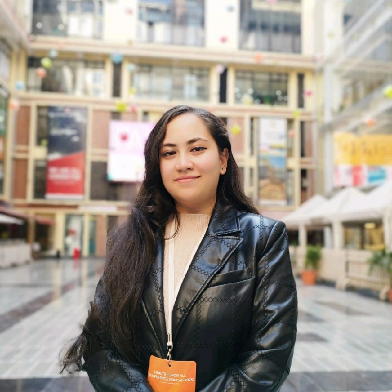

<!DOCTYPE html>
<html lang="en">
<head>
    <meta charset="UTF-8">
    <meta name="viewport" content="width=device-width, initial-scale=1.0">

    <!-- SEO -->
    <meta
        name="description"
        content="GBS-CIDP & NeuroAI Research Foundation Nepal supports awareness, advocacy, education, patient support, and neurological research in Nepal. Founded by Saishna Budhathoki."
    />

    <meta
        name="keywords"
        content="Saishna Budhathoki, GBS Nepal, CIDP Nepal, NeuroAI Research Foundation Nepal, neurological advocacy Nepal, GBS-CIDP Nepal, neurological research Nepal, patient support Nepal"
    />

    <meta name="author" content="GBS-CIDP & NeuroAI Research Foundation Nepal" />

    <!-- Open Graph -->
    <meta property="og:title" content="GBS-CIDP & NeuroAI Research Foundation Nepal" />
    <meta
        property="og:description"
        content="Supporting awareness, advocacy, education, patient care, and neurological research in Nepal."
    />
    <meta property="og:type" content="website" />
    <meta property="og:url" content="https://gbsneuroai.com" />
    <meta property="og:image" content="https://gbsneuroai.com/logo.png" />

    <!-- Twitter -->
    <meta name="twitter:card" content="summary_large_image" />
    <meta name="twitter:title" content="GBS-CIDP & NeuroAI Research Foundation Nepal" />
    <meta
        name="twitter:description"
        content="Supporting awareness, advocacy, education, patient care, and neurological research in Nepal."
    />
    <meta name="twitter:image" content="https://gbsneuroai.com/logo.png" />

    <title>GBS-CIDP & NeuroAI Research Foundation Nepal</title>

    <!-- Fonts -->
    <link rel="preconnect" href="https://fonts.googleapis.com" />
    <link rel="preconnect" href="https://fonts.gstatic.com" crossorigin />

    <link
        href="https://fonts.googleapis.com/css2?family=Cormorant+Garamond:ital,wght@0,300;0,400;0,500;0,600;0,700;1,300;1,400&family=DM+Sans:wght@300;400;500;600&display=swap"
        rel="stylesheet"
    />

    <!-- Structured Data -->
    <script type="application/ld+json">
    {
      "@context": "https://schema.org",
      "@type": "Organization",
      "name": "GBS-CIDP & NeuroAI Research Foundation Nepal",
      "alternateName": [
        "GBSCIDP Nepal",
        "GBSCIDP NeuroAI Research Foundation",
        "GBS CIDP Nepal"
      ],
      "url": "https://gbsneuroai.com",
      "logo": "https://gbsneuroai.com/logo.png",

      "founder": {
        "@type": "Person",
        "name": "Saishna Budhathoki",
        "jobTitle": "Founding Director and Executive Director",
        "sameAs": [
          "https://np.linkedin.com/in/er-saishna-budhathoki-807974282"
        ]
      },

      "sameAs": [
        "https://www.facebook.com/profile.php?id=61584876545928",
        "https://www.instagram.com/gbscidp_nepal/",
        "https://www.linkedin.com/company/gbs-cidp-research-foundation-nepal"
      ],

      "description": "GBS-CIDP & NeuroAI Research Foundation Nepal supports patients and families affected by GBS, CIDP, and neurological disorders through advocacy, awareness, education, patient support, and research."
    }
    </script>

    <!-- Basic CSS -->
    <style>
        * {
            margin: 0;
            padding: 0;
            box-sizing: border-box;
        }

        body {
            font-family: 'DM Sans', sans-serif;
            background-color: #ffffff;
            color: #111111;
            line-height: 1.6;
        }

        h1, h2, h3 {
            font-family: 'Cormorant Garamond', serif;
        }
    </style>

</head>
<body>

</body>
</html>
    <style>

        /* ================= HERO ================= */

.hero {
    position: relative;
    min-height: 100vh;
    display: flex;
    align-items: center;
    overflow: hidden;
}

.hero-slides,
.hero-slide,
.hero-slide img {
    position: absolute;
    width: 100%;
    height: 100%;
    object-fit: cover;
}

.hero-content {
    position: relative;
    z-index: 2;
    max-width: 700px;
    padding: 2rem;
}

.hero-title {
    font-size: 3rem;
    line-height: 1.2;
}

.hero-sub {
    font-size: 1.1rem;
    line-height: 1.6;
}

.hero-actions {
    display: flex;
    gap: 1rem;
    flex-wrap: wrap;
}

/* ================= STATS ================= */

.stats-grid {
    display: grid;
    grid-template-columns: repeat(4, 1fr);
    gap: 1rem;
    text-align: center;
}

/* ================= ABOUT ================= */

.about-grid {
    display: grid;
    grid-template-columns: 1.2fr 1fr;
    gap: 2rem;
}

.value-list {
    display: flex;
    flex-direction: column;
    gap: 1rem;
}

.mission-list {
    display: flex;
    flex-direction: column;
    gap: 1rem;
}

/* ================= TABLET ================= */

@media (max-width: 1024px) {

    .hero-title {
        font-size: 2.4rem;
    }

    .hero-sub {
        font-size: 1rem;
    }

    .about-grid {
        grid-template-columns: 1fr;
    }

    .stats-grid {
        grid-template-columns: repeat(2, 1fr);
    }
}

/* ================= MOBILE ================= */

@media (max-width: 768px) {

    .hero {
        min-height: 90vh;
    }

    .hero-content {
        padding: 1.5rem;
    }

    .hero-title {
        font-size: 2rem;
    }

    .hero-sub {
        font-size: 0.95rem;
    }

    .hero-actions {
        flex-direction: column;
        align-items: flex-start;
    }

    .stats-grid {
        grid-template-columns: repeat(2, 1fr);
    }

    .about-content p {
        font-size: 0.9rem;
    }
}

/* ================= SMALL MOBILE ================= */

@media (max-width: 480px) {

    .hero-content {
        padding: 1rem;
    }

    .hero-title {
        font-size: 1.6rem;
    }

    .hero-sub {
        font-size: 0.85rem;
        line-height: 1.5;
    }

    .hero-eyebrow {
        font-size: 0.7rem;
    }

    .stats-grid {
        grid-template-columns: 1fr;
    }

    .stat-value {
        font-size: 1.4rem;
    }

    .stat-label {
        font-size: 0.75rem;
    }

    .section-title {
        font-size: 1.5rem;
    }

    .value-item p,
    .mission-info p {
        font-size: 0.8rem;
    }
}

/* ================= EXTRA SMALL DEVICES ================= */

@media (max-width: 360px) {

    .hero-title {
        font-size: 1.4rem;
    }

    .hero-sub {
        font-size: 0.8rem;
    }

    .hero-actions a {
        width: 100%;
        text-align: center;
        font-size: 0.8rem;
    }

    .section-title {
        font-size: 1.3rem;
    }

    .stat-value {
        font-size: 1.2rem;
    }

    .stat-label {
        font-size: 0.7rem;
    }
}
        /* ============================================
           RESET & VARIABLES
        ============================================ */
        *, *::before, *::after { margin: 0; padding: 0; box-sizing: border-box; }

        :root {
            --blue-deep:     #0C2440;
            --blue-mid:     #1A5276;
            --blue-bright:  #2471A3;
            --blue-pale:    #D6EAF8;
            --teal:         #148F77;
            --warm-white:    #FAFBFD;
            --off-white:      #F2F4F8;
           --text-dark: #08192E;
            --text-mid : #1A2B3C; 
            --text-light: #3D5166;
            --white:        #FFFFFF;
            --border:       rgba(10,37,64,0.07);

            --font-display: 'Cormorant Garamond', Georgia, serif;
            --font-body:    'DM Sans', system-ui, sans-serif;

            --transition: 0.35s cubic-bezier(0.4,0,0.2,1);
            --shadow-sm:  0 1px 3px rgba(10,37,64,0.08);
            --shadow-md:  0 4px 16px rgba(10,37,64,0.1);
            --shadow-lg:  0 12px 40px rgba(10,37,64,0.15);
        }

        html { scroll-behavior: smooth; font-size: 15px; }

        body {
            font-family: var(--font-body);
            color: var(--text-dark);
            background: var(--white);
            line-height: 1.75;
            overflow-x: hidden;
        }

        h1,h2,h3,h4,h5 {
            font-family: var(--font-display);
            line-height: 1.15;
            color: var(--blue-deep);
        }

        a { color: var(--blue-bright); text-decoration: none; transition: var(--transition); }
        img { max-width: 100%; height: auto; display: block; }

        .container {
            max-width: 1180px;
            margin: 0 auto;
            padding: 0 2rem;
        }

        /* ============================================
           TOP BAR
        ============================================ */
        .top-bar {
            background: var(--blue-deep);
            color: rgba(255,255,255,0.75);
            font-size: 0.8rem;
            letter-spacing: 0.04em;
            padding: 0.55rem 0;
        }
        .top-bar .container {
            display: flex;
            justify-content: space-between;
            align-items: center;
        }
        .top-bar-left { display: flex; gap: 2rem; }
        .top-bar-left span { display: flex; align-items: center; gap: 0.4rem; }
        .top-bar svg { opacity: 0.6; }
        .lang-btn {
            background: rgba(255,255,255,0.12);
            border: 1px solid rgba(255,255,255,0.2);
            color: rgba(255,255,255,0.85);
            padding: 0.2rem 0.75rem;
            border-radius: 3px;
            font-size: 0.75rem;
            font-weight: 500;
            letter-spacing: 0.08em;
            cursor: pointer;
            font-family: var(--font-body);
            transition: var(--transition);
        }
        .lang-btn:hover { background: rgba(255,255,255,0.2); color: #fff; }

        /* ============================================
           NAVIGATION
        ============================================ */
        .navbar {
            background: var(--white);
            border-bottom: 1px solid var(--border);
            position: sticky;
            top: 0;
            z-index: 1000;
            transition: box-shadow var(--transition);
        }
        .navbar.scrolled { box-shadow: var(--shadow-md); }
        .nav-wrapper {
            display: flex;
            align-items: center;
            justify-content: space-between;
            padding: 0.85rem 0;
        }
        .logo {
            display: flex;
            align-items: center;
            gap: 0.85rem;
            color: var(--blue-deep);
        }
        .logo-mark {
            width: 90px; height: 90px;
            border-radius: 50%;
            overflow: hidden;
            flex-shrink: 0;
        }
        .logo-mark svg { width: 24px; height: 24px; }
        .logo-title {
            font-family: var(--font-display);
            font-size: 1.3rem;
            font-weight: 600;
            letter-spacing: -0.01em;
            line-height: 1.1;
        }
        .logo-sub {
            font-size: 0.7rem;
            color: var(--text-light);
            letter-spacing: 0.04em;
            font-weight: 400;
        }

        .nav-menu { display: flex; list-style: none; gap: 0.25rem; align-items: center; }
        .nav-menu > li > a {
            color: var(--text-mid);
            font-size: 0.82rem;
            font-weight: 400;
            padding: 0.5rem 0.75rem;
            letter-spacing: 0.02em;
            border-radius: 4px;
            transition: var(--transition);
            display: flex; align-items: center; gap: 0.25rem;
        }
        .nav-menu > li > a:hover { color: var(--blue-deep); background: var(--warm-white); }
        .nav-menu .arrow { font-size: 0.6rem; opacity: 0.5; transition: transform var(--transition); }
        .dropdown { position: relative; }
        .dropdown:hover .arrow { transform: rotate(180deg); }
        .dropdown-menu {
            position: absolute; top: calc(100% + 0.5rem); left: 0;
            background: var(--white);
            border: 1px solid var(--border);
            border-radius: 8px;
            box-shadow: var(--shadow-lg);
            padding: 0.5rem;
            min-width: 230px;
            list-style: none;
            opacity: 0; visibility: hidden;
            transform: translateY(-6px);
            transition: var(--transition);
        }
        .dropdown:hover .dropdown-menu { opacity: 1; visibility: visible; transform: translateY(0); }
        .dropdown-menu a {
            display: block;
            padding: 0.55rem 0.85rem;
            font-size: 0.85rem;
            color: var(--text-mid);
            border-radius: 5px;
            transition: var(--transition);
        }
        .dropdown-menu a:hover { background: var(--warm-white); color: var(--blue-deep); }
        .dropdown-menu .menu-section-label {
            display: block;
            padding: 0.6rem 0.85rem 0.3rem;
            font-size: 0.68rem;
            font-weight: 600;
            letter-spacing: 0.1em;
            text-transform: uppercase;
            color: var(--text-light);
            margin-top: 0.25rem;
        }
        .dropdown-menu .menu-divider {
            height: 1px;
            background: var(--border);
            margin: 0.4rem 0.5rem;
        }

        .btn-donate-nav {
            background: var(--blue-deep);
            color: var(--white) !important;
            padding: 0.55rem 1.35rem !important;
            border-radius: 5px;
            font-weight: 600 !important;
            letter-spacing: 0.02em;
            margin-left: 0.5rem;
        }
        .btn-donate-nav:hover { background: var(--blue-mid) !important; transform: none; }

        .mobile-toggle {
            display: none;
            flex-direction: column;
            gap: 5px;
            background: none;
            border: none;
            cursor: pointer;
            padding: 0.4rem;
        }
        .mobile-toggle span {
            width: 22px; height: 2px;
            background: var(--blue-deep);
            border-radius: 2px;
            transition: var(--transition);
        }

        /* ============================================
           HERO — IMAGE SLIDER
        ============================================ */
        .hero {
            position: relative;
            height: 92vh;
            min-height: 600px;
            max-height: 850px;
            overflow: hidden;
            background: var(--blue-deep);
        }

        .hero-slides { position: absolute; inset: 0; }
        .hero-slide {
            position: absolute; inset: 0;
            opacity: 0;
            transition: opacity 1.2s ease;
        }
        .hero-slide.active { opacity: 1; }

        .hero-slide img {
            width: 100%; height: 100%;
            object-fit: cover;
            object-position: center;
            filter: brightness(0.45) saturate(0.7);
            transform: scale(1);
            transition: transform 8s ease-out;
        }
        .hero-slide.active img { transform: scale(1.04); }

        .hero-overlay {
            position: absolute; inset: 0;
            background: linear-gradient(
                to right,
                rgba(10,37,64,0.8) 0%,
                rgba(10,37,64,0.4) 60%,
                transparent 100%
            );
        }

        .hero-content {
            position: absolute; inset: 0;
            display: flex; flex-direction: column;
            justify-content: center;
            padding: 0 2rem;
            max-width: 1180px;
            margin: 0 auto;
            left: 50%; transform: translateX(-50%);
            width: 100%;
        }
        .hero-eyebrow {
            font-size: 0.75rem;
            letter-spacing: 0.18em;
            text-transform: uppercase;
            color: rgba(255,255,255,0.6);
            margin-bottom: 1.25rem;
            font-family: var(--font-body);
            font-weight: 500;
            opacity: 0;
            animation: slideUp 0.8s 0.3s ease forwards;
        }
        .hero-title {
            font-family: var(--font-display);
            font-size: clamp(2.8rem, 5.5vw, 5rem);
            font-weight: 400;
            color: var(--white);
            line-height: 1.08;
            max-width: 680px;
            margin-bottom: 1.5rem;
            opacity: 0;
            animation: slideUp 0.8s 0.5s ease forwards;
        }
        .hero-title em { font-style: italic; color: rgba(255,255,255,0.7); }
        .hero-sub {
            font-size: 1.05rem;
            color: rgba(255,255,255,0.75);
            max-width: 520px;
            line-height: 1.7;
            margin-bottom: 2.5rem;
            font-weight: 300;
            opacity: 0;
            animation: slideUp 0.8s 0.7s ease forwards;
        }
        .hero-actions {
            display: flex; gap: 1rem; flex-wrap: wrap;
            opacity: 0;
            animation: slideUp 0.8s 0.9s ease forwards;
        }
        @keyframes slideUp {
            from { opacity: 0; transform: translateY(20px); }
            to   { opacity: 1; transform: translateY(0); }
        }

        .slider-controls {
            position: absolute;
            bottom: 2.5rem; right: 2.5rem;
            display: flex; gap: 0.5rem; z-index: 10;
        }
        .slider-dot {
            width: 28px; height: 3px;
            background: rgba(255,255,255,0.3);
            border: none; cursor: pointer;
            transition: var(--transition);
            border-radius: 2px;
        }
        .slider-dot.active { background: rgba(255,255,255,0.9); width: 48px; }

        .slider-arrows {
            position: absolute;
            bottom: 2.4rem; left: 50%; transform: translateX(-50%);
            display: flex; gap: 0.75rem; z-index: 10;
        }
        .slider-arrow {
            width: 42px; height: 42px;
            background: rgba(255,255,255,0.12);
            border: 1px solid rgba(255,255,255,0.25);
            color: rgba(255,255,255,0.85);
            border-radius: 50%;
            display: flex; align-items: center; justify-content: center;
            cursor: pointer;
            transition: var(--transition);
            backdrop-filter: blur(4px);
        }
        .slider-arrow:hover { background: rgba(255,255,255,0.25); color: #fff; }
        .slider-arrow svg { width: 16px; height: 16px; }

        /* ============================================
           STATS BAR
        ============================================ */
        .stats-bar {
            background: var(--white);
            border-bottom: 1px solid var(--border);
        }
        .stats-grid {
            display: grid;
            grid-template-columns: repeat(4, 1fr);
        }
        .stat-item {
            padding: 1.75rem 1.5rem;
            text-align: center;
            border-right: 1px solid var(--border);
        }
        .stat-item:last-child { border-right: none; }
        .stat-value {
            font-family: var(--font-display);
            font-size: 2.6rem;
            font-weight: 500;
            color: var(--blue-deep);
            line-height: 1;
        }
        .stat-label {
            font-size: 0.75rem;
            color: var(--text-light);
            letter-spacing: 0.06em;
            text-transform: uppercase;
            margin-top: 0.4rem;
        }

        /* ============================================
           BUTTONS
        ============================================ */
        .btn {
            display: inline-flex;
            align-items: center; gap: 0.4rem;
            padding: 0.8rem 1.85rem;
          border-radius: 6px;
            font-weight: 500;
            font-size: 0.9rem;
            letter-spacing: 0.01em;
            transition: var(--transition);
            border: none; cursor: pointer;
            font-family: var(--font-body);
        }
        .btn-primary { background: var(--blue-deep); color: var(--white); }
        .btn-primary:hover { background: var(--blue-mid); color: var(--white); transform: translateY(-1px); box-shadow: 0 6px 20px rgba(10,37,64,0.25); }
        .btn-ghost { background: transparent; color: var(--white); border: 1px solid rgba(255,255,255,0.4); }
        .btn-ghost:hover { background: rgba(255,255,255,0.1); color: var(--white); border-color: rgba(255,255,255,0.7); }
        .btn-outline-dark { background: transparent; color: var(--blue-deep); border: 1.5px solid var(--blue-deep); }
        .btn-outline-dark:hover { background: var(--blue-deep); color: var(--white); }
        .btn-lg { padding: 1rem 2.2rem; font-size: 0.95rem; }

        /* ============================================
           SECTION DEFAULTS
        ============================================ */
        .section { padding: 7rem 0; }
        .section-alt { background: #FAFBFD; }

        .section-tag {
            display: inline-block;
           font-size: 0.68rem;
            font-weight: 600;
          letter-spacing: 0.22em;
          opacity: 0.8;
            text-transform: uppercase;
            color: var(--blue-bright);
            margin-bottom: 1rem;
        }
        .section-title {
            font-family: var(--font-display);
            font-size: clamp(2rem, 3.5vw, 3rem);
            font-weight: 400;
            color: var(--blue-deep);
            margin-bottom: 1rem;
        }
        .section-sub {
            font-size: 1rem;
            color: var(--text-light);
            max-width: 580px;
            line-height: 1.75;
        }
        .section-header-center { text-align: center; }
        .section-header-center .section-sub { margin: 0 auto; }

        /* ============================================
           ABOUT SECTION
        ============================================ */
        .about-grid {
            display: grid;
            grid-template-columns: 1.15fr 1fr;
            gap: 5rem;
            align-items: start;
        }
        .about-content p {
            color: var(--text-mid);
            line-height: 1.85;
            margin-bottom: 1.25rem;
            font-size: 0.975rem;
        }
        .value-list { margin-top: 2rem; display: flex; flex-direction: column; gap: 0.75rem; }
        .value-item {
            display: flex; gap: 1rem; align-items: flex-start;
            padding: 1rem 1.25rem;
            background: var(--white);
            border: 1px solid var(--border);
            border-radius: 10px;
            transition: var(--transition);
        }
        .value-item:hover { border-color: var(--blue-bright); box-shadow: var(--shadow-sm); }
        .value-dot {
            width: 8px; height: 8px;
            background: var(--blue-bright);
            border-radius: 50%;
            flex-shrink: 0;
            margin-top: 0.35rem;
        }
        .value-item strong { display: block; font-size: 0.9rem; color: var(--blue-deep); margin-bottom: 0.2rem; }
        .value-item p { margin: 0; font-size: 0.83rem; color: var(--text-light); }

        .mission-card {
            background: var(--blue-deep);
            color: var(--white);
            border-radius: 12px;
            padding: 2.5rem;
            position: sticky;
            top: 90px;
        }
        .mission-card h4 {
            font-family: var(--font-display);
            font-size: 1.5rem;
            font-weight: 400;
            color: var(--white);
            margin-bottom: 2rem;
        }
        .mission-list { list-style: none; display: flex; flex-direction: column; gap: 0; }
        .mission-list li {
            display: flex; gap: 1.25rem; align-items: flex-start;
            padding: 1.25rem 0;
            border-bottom: 1px solid rgba(255,255,255,0.1);
        }
        .mission-list li:last-child { border-bottom: none; }
        .mission-num {
            font-family: var(--font-display);
            font-size: 1.8rem;
            font-weight: 300;
            color: rgba(255,255,255,0.25);
            line-height: 1;
            flex-shrink: 0;
            min-width: 2rem;
        }
        .mission-info strong { display: block; font-size: 0.95rem; font-weight: 600; color: rgba(255,255,255,0.95); margin-bottom: 0.25rem; }
        .mission-info p { margin: 0; font-size: 0.82rem; color: rgba(255,255,255,0.5); line-height: 1.5; }

        /* ============================================
           CONDITIONS SECTION
        ============================================ */
        .tab-buttons {
            display: flex; gap: 0; border-bottom: 2px solid var(--border);
            margin-bottom: 3rem;
        }
        .tab-button {
            padding: 0.9rem 2rem;
            background: none; border: none;
            font-family: var(--font-body);
            font-size: 0.875rem; font-weight: 500;
            color: var(--text-light);
            cursor: pointer;
            position: relative;
            transition: var(--transition);
            letter-spacing: 0.03em;
        }
        .tab-button::after {
            content: '';
            position: absolute; bottom: -2px; left: 0; right: 0;
            height: 2px; background: var(--blue-deep);
            transform: scaleX(0);
            transition: transform var(--transition);
        }
        .tab-button:hover { color: var(--blue-deep); }
        .tab-button.active { color: var(--blue-deep); font-weight: 600; }
        .tab-button.active::after { transform: scaleX(1); }

        .tab-pane { display: none; animation: fadeIn 0.4s ease; }
        .tab-pane.active { display: block; }
        @keyframes fadeIn { from { opacity: 0; } to { opacity: 1; } }

        .condition-content {
            display: grid;
            grid-template-columns: 1.2fr 1fr;
            gap: 4rem;
            align-items: start;
        }
        .condition-text h3 {
            font-family: var(--font-display);
            font-size: 2rem; font-weight: 400;
            margin-bottom: 1rem;
        }
        .condition-text p {
            color: var(--text-mid); line-height: 1.85; font-size: 0.95rem;
            margin-bottom: 1rem;
        }
        .condition-text h4 {
            font-size: 0.85rem; font-weight: 600;
            letter-spacing: 0.08em; text-transform: uppercase;
            color: var(--text-light);
            margin: 1.5rem 0 0.75rem;
        }
        .symptom-list, .treatment-list {
            list-style: none; display: flex; flex-direction: column; gap: 0.5rem;
        }
        .symptom-list li, .treatment-list li {
            display: flex; align-items: flex-start; gap: 0.75rem;
            font-size: 0.9rem; color: var(--text-mid); line-height: 1.6;
        }
        .symptom-list li::before {
            content: '';
            width: 5px; height: 5px; background: var(--blue-bright);
            border-radius: 50%; flex-shrink: 0; margin-top: 0.5rem;
        }
        .info-box {
            background: #FFF8E7;
            border-left: 3px solid #E6A817;
            padding: 1rem 1.25rem;
            border-radius: 0 6px 6px 0;
            margin-top: 1.5rem;
            font-size: 0.87rem;
            color: var(--text-mid);
        }
        .info-box.success { background: #EAF7F0; border-color: var(--teal); }
        .info-box strong { display: block; margin-bottom: 0.35rem; color: var(--text-dark); }

        .condition-visual { position: sticky; top: 90px; }
        .clinical-img-wrap {
            border-radius: 10px;
            overflow: hidden;
            aspect-ratio: 4/3;
            background: var(--off-white);
            box-shadow: var(--shadow-md);
        }
        .clinical-img-wrap img {
            width: 100%; height: 100%;
            object-fit: cover;
            transition: transform 0.6s ease;
        }
        .clinical-img-wrap:hover img { transform: scale(1.03); }
        .visual-caption {
            margin-top: 1rem;
            padding: 0.85rem 1rem;
            background: var(--warm-white);
            border-radius: 6px;
            font-size: 0.82rem;
            color: var(--text-light);
            line-height: 1.6;
        }

        /* ============================================
           RESOURCES SECTION
        ============================================ */
        .resources-grid {
            display: grid;
            grid-template-columns: repeat(3, 1fr);
            gap: 1.25rem;
            margin-top: 3rem;
        }
        .resource-card {
            background: var(--white);
            border: 1px solid var(--border);
            border-radius: 14px;
            padding: 2.25rem 2rem;
            transition: var(--transition);
            display: flex; flex-direction: column;
        }
        .resource-card:hover {
            border-color: var(--blue-bright);
            box-shadow: var(--shadow-md);
            transform: translateY(-3px);
        }
        .resource-icon {
            width: 44px; height: 44px;
            background: var(--blue-pale);
            border-radius: 8px;
            display: flex; align-items: center; justify-content: center;
            margin-bottom: 1.25rem;
        }
        .resource-icon svg { width: 20px; height: 20px; color: var(--blue-mid); }
        .resource-card h3 { font-family: var(--font-display); font-size: 1.2rem; font-weight: 500; margin-bottom: 0.6rem; }
        .resource-card p { font-size: 0.875rem; color: var(--text-light); flex-grow: 1; margin-bottom: 1.25rem; line-height: 1.65; }
        .card-link { font-size: 0.83rem; font-weight: 600; color: var(--blue-bright); letter-spacing: 0.02em; }
        .card-link:hover { color: var(--blue-deep); }

        /* ============================================
           RESEARCH SECTION
        ============================================ */
        .research-card-grid {
            display: grid;
            grid-template-columns: repeat(2, 1fr);
            gap: 1px;
            background: var(--border);
            border-radius: 12px;
            overflow: hidden;
            margin-bottom: 3rem;
        }
        .research-card {
            background: var(--white);
            padding: 1.85rem 1.65rem;
            cursor: pointer;
            transition: background var(--transition);
            display: flex;
            flex-direction: column;
        }
        .research-card:hover { background: var(--warm-white); }
        .research-card-icon {
            width: 44px; height: 44px;
            border-radius: 8px;
            display: flex; align-items: center; justify-content: center;
            margin-bottom: 1.1rem; flex-shrink: 0;
        }
        .research-card-icon svg { width: 20px; height: 20px; }
        .research-card h3 {
            font-family: var(--font-display);
            font-size: 1.15rem; font-weight: 500;
            color: var(--blue-deep); margin-bottom: 0.5rem;
        }
        .research-card > p {
            font-size: 0.855rem; color: var(--text-light);
            line-height: 1.65; margin: 0 0 1rem; flex-grow: 1;
        }
        .learn-more-btn {
            display: inline-flex; align-items: center; gap: 0.3rem;
            font-size: 0.8rem; font-weight: 600;
            color: var(--blue-bright); background: none; border: none;
            cursor: pointer; font-family: var(--font-body);
            padding: 0; letter-spacing: 0.02em;
            transition: color var(--transition);
        }
        .learn-more-btn:hover { color: var(--blue-deep); }
        .learn-more-btn .chevron {
            font-size: 0.62rem;
            transition: transform 0.3s ease;
            display: inline-block;
        }
        .learn-more-btn[aria-expanded="true"] .chevron { transform: rotate(180deg); }
        .research-expand {
            font-size: 0.83rem; color: var(--text-mid);
            line-height: 1.7; overflow: hidden;
            max-height: 0; opacity: 0;
            transition: max-height 0.4s ease, opacity 0.3s ease, padding 0.3s ease, margin 0.3s ease;
            border-top: 1px solid transparent;
            padding-top: 0; margin-top: 0;
        }
        .research-expand.open {
            max-height: 280px; opacity: 1;
            padding-top: 0.85rem; margin-top: 0.85rem;
            border-top-color: var(--border);
        }
        .research-prog-grid {
            display: grid;
            grid-template-columns: 1fr 1fr;
            gap: 2rem;
            align-items: start;
        }
        .research-panel {
            background: var(--warm-white);
            border: 1px solid var(--border);
            border-radius: 12px;
            padding: 2.25rem;
            position: sticky; top: 90px;
        }
        .research-panel h3 {
            font-family: var(--font-display);
            font-size: 1.35rem; font-weight: 400;
            margin-bottom: 1.75rem;
        }
        .progress-item { margin-bottom: 1.5rem; }
        .progress-header {
            display: flex; justify-content: space-between;
            font-size: 0.83rem; margin-bottom: 0.5rem;
        }
        .progress-pct { font-weight: 600; color: var(--blue-deep); }
        .progress-bar { height: 5px; background: var(--off-white); border-radius: 10px; overflow: hidden; }
        .progress-fill {
            height: 100%;
            background: linear-gradient(90deg, var(--blue-deep), var(--blue-bright));
            border-radius: 10px;
        }
        .panel-note {
            font-size: 0.8rem; color: var(--text-light);
            font-style: italic; line-height: 1.6; margin: 0;
        }
        .research-cta-panel {
            background: var(--blue-deep);
            border-radius: 12px;
            padding: 2.25rem;
            display: flex; flex-direction: column;
        }
        .research-cta-block {
            padding-bottom: 1.5rem;
            margin-bottom: 1.5rem;
            border-bottom: 1px solid rgba(255,255,255,0.1);
        }
        .research-cta-block:last-child {
            padding-bottom: 0; margin-bottom: 0; border-bottom: none;
        }
        .research-cta-block h4 {
            font-family: var(--font-display);
            font-size: 1.2rem; font-weight: 400;
            color: var(--white); margin-bottom: 0.5rem;
        }
        .research-cta-block p {
            font-size: 0.82rem; color: rgba(255,255,255,0.5);
            line-height: 1.65; margin: 0 0 1rem;
        }
        .btn-outline-white {
            display: inline-flex; align-items: center; gap: 0.4rem;
            padding: 0.55rem 1.2rem; border-radius: 5px;
            font-weight: 500; font-size: 0.82rem; letter-spacing: 0.01em;
            transition: var(--transition); cursor: pointer;
            font-family: var(--font-body);
            background: transparent; color: rgba(255,255,255,0.85);
            border: 1.5px solid rgba(255,255,255,0.25);
        }
        .btn-outline-white:hover {
            background: rgba(255,255,255,0.1);
            border-color: rgba(255,255,255,0.55);
            color: var(--white);
        }
        .btn-teal-sm {
            display: inline-flex; align-items: center; gap: 0.4rem;
            padding: 0.55rem 1.2rem; border-radius: 5px;
            font-weight: 500; font-size: 0.82rem;
            transition: var(--transition); cursor: pointer;
            font-family: var(--font-body);
            background: var(--teal); color: var(--white); border: none;
        }
        .btn-teal-sm:hover { background: #0F7A66; transform: translateY(-1px); }

        /* ============================================
           PROJECTS SECTION (NEW)
        ============================================ */
        .projects-section { padding: 5.5rem 0; background: var(--white); }

        /* Sub-section anchors */
        .projects-subsection { margin-bottom: 4rem; }
        .projects-subsection:last-child { margin-bottom: 0; }

        .subsection-heading {
            display: flex;
            align-items: center;
            gap: 1rem;
            margin-bottom: 2rem;
            padding-bottom: 1rem;
            border-bottom: 2px solid var(--border);
        }
        .subsection-heading h3 {
            font-family: var(--font-display);
            font-size: 1.65rem;
            font-weight: 400;
        }
        .subsection-badge {
            display: inline-flex;
            align-items: center;
            gap: 0.4rem;
            padding: 0.3rem 0.85rem;
            border-radius: 20px;
            font-size: 0.7rem;
            font-weight: 600;
            letter-spacing: 0.08em;
            text-transform: uppercase;
        }
        .badge-ongoing {
            background: #E8F8F0;
            color: #0D6B45;
            border: 1px solid #A8DFCA;
        }
        .badge-completed {
            background: #EDF2FB;
            color: #1A3A7A;
            border: 1px solid #AABDE8;
        }
        .badge-dot {
            width: 6px; height: 6px;
            border-radius: 50%;
            background: currentColor;
            animation: pulse 2s infinite;
        }
        @keyframes pulse {
            0%, 100% { opacity: 1; }
            50% { opacity: 0.4; }
        }
        .badge-ongoing .badge-dot { animation: pulse 2s infinite; }
        .badge-completed .badge-dot { animation: none; }

        /* Project cards grid */
        .project-cards {
            display: grid;
            grid-template-columns: repeat(2, 1fr);
            gap: 1.25rem;
        }
        .project-card {
            background: var(--white);
            border: 1px solid var(--border);
            border-radius: 12px;
            padding: 1.75rem;
            transition: var(--transition);
            position: relative;
            overflow: hidden;
        }
        .project-card::before {
            content: '';
            position: absolute;
            top: 0; left: 0; right: 0;
            height: 3px;
            background: linear-gradient(90deg, var(--blue-deep), var(--blue-bright));
            border-radius: 12px 12px 0 0;
            transform: scaleX(0);
            transform-origin: left;
            transition: transform 0.4s ease;
        }
        .project-card:hover::before { transform: scaleX(1); }
        .project-card:hover {
            border-color: rgba(36,113,163,0.3);
            box-shadow: var(--shadow-md);
            transform: translateY(-2px);
        }
        .project-card-header {
            display: flex;
            justify-content: space-between;
            align-items: flex-start;
            margin-bottom: 1rem;
            gap: 1rem;
        }
        .project-card h4 {
            font-family: var(--font-display);
            font-size: 1.1rem;
            font-weight: 500;
            color: var(--blue-deep);
            line-height: 1.3;
            flex: 1;
        }
        .project-year {
            font-size: 0.72rem;
            font-weight: 600;
            letter-spacing: 0.06em;
            color: var(--text-light);
            background: var(--off-white);
            padding: 0.25rem 0.65rem;
            border-radius: 4px;
            white-space: nowrap;
            flex-shrink: 0;
        }
        .project-card p {
            font-size: 0.855rem;
            color: var(--text-light);
            line-height: 1.7;
            margin-bottom: 1.25rem;
        }
        .project-meta {
            display: flex;
            flex-wrap: wrap;
            gap: 0.5rem;
            margin-top: auto;
        }
        .project-tag {
            display: inline-flex;
            align-items: center;
            gap: 0.35rem;
            font-size: 0.72rem;
            font-weight: 500;
            color: var(--blue-mid);
            background: var(--blue-pale);
            padding: 0.25rem 0.7rem;
            border-radius: 4px;
        }
        .project-tag svg { width: 11px; height: 11px; }
        .project-collab {
            display: flex;
            align-items: center;
            gap: 0.5rem;
            margin-top: 1rem;
            padding-top: 1rem;
            border-top: 1px solid var(--border);
            font-size: 0.78rem;
            color: var(--text-light);
        }
        .project-collab strong { color: var(--text-mid); font-weight: 600; }
        .project-collab svg { width: 13px; height: 13px; opacity: 0.5; flex-shrink: 0; }

        /* Completed research card — publication style */
        .pub-card {
            background: var(--white);
            border: 1px solid var(--border);
            border-radius: 12px;
            padding: 2rem;
            transition: var(--transition);
            position: relative;
        }
        .pub-card:hover {
            border-color: rgba(36,113,163,0.3);
            box-shadow: var(--shadow-md);
        }
        .pub-card-inner {
            display: grid;
            grid-template-columns: auto 1fr;
            gap: 1.5rem;
            align-items: flex-start;
        }
        .pub-icon {
            width: 48px; height: 48px;
            background: var(--blue-deep);
            border-radius: 10px;
            display: flex; align-items: center; justify-content: center;
            flex-shrink: 0;
        }
        .pub-icon svg { width: 22px; height: 22px; color: white; }
        .pub-status-badge {
            display: inline-flex;
            align-items: center;
            gap: 0.35rem;
            font-size: 0.68rem;
            font-weight: 600;
            letter-spacing: 0.08em;
            text-transform: uppercase;
            color: #0D6B45;
            background: #E8F8F0;
            border: 1px solid #A8DFCA;
            padding: 0.25rem 0.7rem;
            border-radius: 4px;
            margin-bottom: 0.65rem;
        }
        .pub-title {
            font-family: var(--font-display);
            font-size: 1.25rem;
            font-weight: 500;
            color: var(--blue-deep);
            line-height: 1.3;
            margin-bottom: 0.6rem;
        }
        .pub-meta-row {
            display: flex;
            flex-wrap: wrap;
            gap: 1.25rem;
            margin-bottom: 1rem;
        }
        .pub-meta-item {
            display: flex;
            align-items: center;
            gap: 0.4rem;
            font-size: 0.8rem;
            color: var(--text-light);
        }
        .pub-meta-item svg { width: 12px; height: 12px; opacity: 0.5; }
        .pub-doi {
            display: inline-flex;
            align-items: center;
            gap: 0.5rem;
            font-size: 0.8rem;
            font-weight: 500;
            color: var(--blue-bright);
            background: var(--blue-pale);
            padding: 0.45rem 1rem;
            border-radius: 5px;
            margin-top: 0.5rem;
            transition: var(--transition);
        }
        .pub-doi:hover {
            background: var(--blue-deep);
            color: white;
        }
        .pub-doi svg { width: 13px; height: 13px; }

        /* ============================================
           CTA SECTION
        ============================================ */
        .cta-section {
            background: var(--blue-deep);
            padding: 6rem 0;
            text-align: center;
        }
        .cta-section h2 {
            font-family: var(--font-display);
            font-size: clamp(2rem, 4vw, 3.2rem);
            font-weight: 400;
            color: var(--white);
            margin-bottom: 1rem;
        }
        .cta-section p {
            font-size: 1rem; color: rgba(255,255,255,0.65);
            max-width: 540px; margin: 0 auto 2.5rem;
            line-height: 1.75;
        }
        .cta-buttons { display: flex; gap: 1rem; justify-content: center; flex-wrap: wrap; }

        /* ============================================
           FOOTER
        ============================================ */
        .footer { background: #060F1A; color: rgba(255,255,255,0.65); padding: 5rem 0 2.5rem; }
        .footer-grid {
            display: grid;
            grid-template-columns: 2fr 1fr 1fr 1.5fr;
            gap: 3.5rem;
            margin-bottom: 3.5rem;
        }
        .footer-brand { margin-bottom: 1.25rem; }
        .footer-logo-wrap {
            display: flex; align-items: center; gap: 0.75rem;
            margin-bottom: 1.25rem;
        }
        .footer-logo-mark {
            width: 38px; height: 38px;
            background: rgba(255,255,255,0.1);
            border-radius: 50%;
            display: flex; align-items: center; justify-content: center;
        }
        .footer-logo-mark svg { width: 20px; height: 20px; }
        .footer-logo-name {
            font-family: var(--font-display);
            font-size: 1.1rem;
            color: rgba(255,255,255,0.9);
            line-height: 1.2;
        }
        .footer-brand p { font-size: 0.83rem; line-height: 1.8; }
        .social-links { display: flex; gap: 0.6rem; margin-top: 1.5rem; }
        .social-links a {
            width: 36px; height: 36px;
            background: rgba(255,255,255,0.08);
            border: 1px solid rgba(255,255,255,0.1);
            border-radius: 50%;
            display: flex; align-items: center; justify-content: center;
            transition: var(--transition); color: rgba(255,255,255,0.5);
        }
        .social-links a:hover { background: rgba(255,255,255,0.15); color: rgba(255,255,255,0.9); }
        .social-links svg { width: 15px; height: 15px; }

        .footer-col h4 { font-size: 0.72rem; font-weight: 600; letter-spacing: 0.12em; text-transform: uppercase; color: rgba(255,255,255,0.35); margin-bottom: 1.25rem; }
        .footer-col ul { list-style: none; display: flex; flex-direction: column; gap: 0.6rem; }
        .footer-col ul a { font-size: 0.85rem; color: rgba(255,255,255,0.55); transition: var(--transition); }
        .footer-col ul a:hover { color: rgba(255,255,255,0.9); }
        .contact-item { display: flex; align-items: flex-start; gap: 0.6rem; font-size: 0.85rem; margin-bottom: 0.75rem; }
        .contact-item svg { width: 14px; height: 14px; opacity: 0.4; flex-shrink: 0; margin-top: 0.15rem; }
        .contact-item a { color: rgba(255,255,255,0.55); }
        .contact-item a:hover { color: rgba(255,255,255,0.9); }

        .footer-bottom {
            border-top: 1px solid rgba(255,255,255,0.06);
            padding-top: 2rem;
            display: flex; justify-content: space-between; align-items: center;
            flex-wrap: wrap; gap: 0.75rem;
        }
        .footer-bottom p { font-size: 0.78rem; color: rgba(255,255,255,0.3); }
        .footer-bottom a { color: rgba(255,255,255,0.3); }
        .footer-bottom a:hover { color: rgba(255,255,255,0.7); }

        /* ============================================
           PATIENT STORIES SLIDER
        ============================================ */
        #storiesSlider {
            position: relative;
            margin-top: 3.5rem;
            overflow: hidden;
            border-radius: 20px;
            box-shadow: 0 20px 60px rgba(10,37,64,0.12);
        }
        .pstory-slide { display: none; }
        .pstory-inner {
            display: grid;
            grid-template-columns: 1fr 1fr;
            height: 510px;
            align-items: stretch;
        }
        .pstory-img-wrap { position: relative; overflow: hidden; }
        .pstory-img-wrap img { width: 100%; height: 100%; object-fit: cover; object-position: center 20%; display: block; }
        .pstory-img-overlay { position: absolute; inset: 0; }
        .pstory-badge {
            position: absolute; top: 1.25rem; left: 1.25rem;
            font-size: 0.7rem; font-weight: 600; letter-spacing: 0.12em;
            text-transform: uppercase; color: white;
            padding: 0.3rem 0.85rem; border-radius: 20px; backdrop-filter: blur(4px);
        }
        .pstory-content { padding: 1.75rem 2rem; display: flex; flex-direction: column; justify-content: center; }
        .pstory-quote-mark { font-family: 'Cormorant Garamond', Georgia, serif; font-size: 1.8rem; color: rgba(255,255,255,0.15); line-height: 0.8; margin-bottom: 0.75rem; }
        .pstory-quote { font-family: 'Cormorant Garamond', Georgia, serif; font-size: 0.97rem; color: rgba(255,255,255,0.9); line-height: 1.75; font-style: italic; margin-bottom: 1rem; flex-grow: 1; }
        .pstory-author { border-top: 1px solid rgba(255,255,255,0.1); padding-top: 0.85rem; }
        .pstory-author-name { font-weight: 600; font-size: 0.95rem; color: white; margin-bottom: 0.2rem; }
        .pstory-author-meta { font-size: 0.78rem; color: rgba(255,255,255,0.5); }
        #psPrev, #psNext {
            position: absolute; top: 50%; transform: translateY(-50%);
            width: 40px; height: 40px; border-radius: 50%;
            background: rgba(255,255,255,0.15); border: 1px solid rgba(255,255,255,0.25);
            color: white; display: flex; align-items: center; justify-content: center;
            cursor: pointer; backdrop-filter: blur(4px); transition: background 0.3s; z-index: 10;
        }
        #psPrev { left: 1rem; }
        #psNext { right: 1rem; }
        #psPrev:hover, #psNext:hover { background: rgba(255,255,255,0.28); }
        #psCounter { position: absolute; bottom: 1rem; right: 1.5rem; font-size: 0.75rem; color: rgba(255,255,255,0.4); letter-spacing: 0.08em; z-index: 10; }

        /* ============================================
           RESPONSIVE
        ============================================ */
        @media (max-width: 992px) {
            .nav-menu { display: none; }
            .nav-menu.open {
                display: flex; flex-direction: column;
                position: absolute; top: 100%; left: 0; right: 0;
                background: var(--white);
                border-top: 1px solid var(--border);
                padding: 1rem;
                box-shadow: var(--shadow-lg);
                gap: 0.25rem;
            }
            .mobile-toggle { display: flex; }
            .navbar { position: relative; }
            .nav-wrapper { position: relative; }
            .about-grid, .condition-content { grid-template-columns: 1fr; gap: 2.5rem; }
            .mission-card, .condition-visual { position: static; }
            .resources-grid { grid-template-columns: repeat(2, 1fr); }
            .footer-grid { grid-template-columns: repeat(2, 1fr); gap: 2rem; }
            .stats-grid { grid-template-columns: repeat(2, 1fr); }
            .stat-item:nth-child(2) { border-right: none; }
            .stat-item:nth-child(3) { border-right: 1px solid var(--border); }
            .stat-item { border-top: 1px solid var(--border); }
            .stat-item:first-child, .stat-item:nth-child(2) { border-top: none; }
            .research-prog-grid { grid-template-columns: 1fr; }
            .research-panel { position: static; }
            .project-cards { grid-template-columns: 1fr; }
            .pub-card-inner { grid-template-columns: 1fr; }
        }
        @media (max-width: 768px) {
            .pstory-inner { grid-template-columns: 1fr !important; height: auto !important; }
            .pstory-img-wrap { height: 220px; }
            .pstory-img-wrap img { height: 220px !important; object-position: center 20% !important; }
            .pstory-content { padding: 1.25rem !important; }
            .pstory-quote { font-size: 0.9rem !important; margin-bottom: 1rem !important; }
            #psPrev { left: 0.4rem !important; width: 34px !important; height: 34px !important; top: 30% !important; }
            #psNext { right: 0.4rem !important; width: 34px !important; height: 34px !important; top: 30% !important; }
            .research-card-grid { grid-template-columns: 1fr; }
            .subsection-heading { flex-wrap: wrap; }
        }
        @media (max-width: 640px) {
            .hero { height: 100svh; max-height: none; }
            .resources-grid, .footer-grid, .stats-grid { grid-template-columns: 1fr; }
            .stat-item { border-right: none; border-top: 1px solid var(--border); }
            .tab-buttons { overflow-x: auto; }
            .top-bar-left { gap: 1rem; font-size: 0.73rem; }
            .footer-bottom { flex-direction: column; text-align: center; }
            .pstory-img-wrap img { height: 180px !important; }
        }
  .pub-card p {
    font-size: 0.875rem;
    line-height: 1.7;
    color: var(--text-light);

    /* 🔑 FIXES */
    word-wrap: break-word;
    overflow-wrap: break-word;
    word-break: break-word;
}

/* Tablet */
@media (max-width: 768px) {
    .pub-card p {
        font-size: 0.8rem;
        line-height: 1.6;
    }
}

/*Mobile */
@media (max-width: 480px) {
    .pub-card p {
        font-size: 0.75rem;
        line-height: 1.5;
    }
}
/* 📱 Extra Small Devices (phones < 360px) */
@media (max-width: 360px) {

    .pub-card-inner {
        padding: 0.75rem;
        gap: 0.6rem;
    }

    .pub-title {
        font-size: 0.85rem;
        line-height: 1.3;
    }

    .pub-card p {
        font-size: 0.7rem;
        line-height: 1.4;

        /* prevent overflow */
        word-break: break-word;
        overflow-wrap: break-word;
    }

    .pub-meta-row {
        flex-direction: column;
        gap: 0.3rem;
    }

    .pub-meta-item {
        font-size: 0.65rem;
    }

    .pub-status-badge {
        font-size: 0.6rem;
        padding: 0.15rem 0.4rem;
    }

    .pub-icon {
        width: 34px;
        height: 34px;
        min-width: 34px;
    }

    .pub-icon svg {
        width: 18px;
        height: 18px;
    }

    .pub-doi {
        font-size: 0.65rem;
        word-break: break-all;
    }
}
    </style>
</head>
<body>

    <!-- Top Bar -->
    <div class="top-bar">
        <div class="container">
            <div class="top-bar-left">
                <span>
                    <svg width="12" height="12" viewBox="0 0 24 24" fill="none" stroke="currentColor" stroke-width="2"><path d="M22 16.92v3a2 2 0 01-2.18 2 19.79 19.79 0 01-8.63-3.07A19.5 19.5 0 013.07 12a19.79 19.79 0 01-3.07-8.67A2 2 0 012 1.18h3a2 2 0 012 1.72c.127.96.361 1.903.7 2.81a2 2 0 01-.45 2.11L6.09 9a16 16 0 006.91 6.91l1.27-1.27a2 2 0 012.11-.45c.907.339 1.85.573 2.81.7A2 2 0 0122 16.92z"/></svg>
                    014560964
                </span>
                <span>
                    <svg width="12" height="12" viewBox="0 0 24 24" fill="none" stroke="currentColor" stroke-width="2"><path d="M4 4h16c1.1 0 2 .9 2 2v12c0 1.1-.9 2-2 2H4c-1.1 0-2-.9-2-2V6c0-1.1.9-2 2-2z"/><polyline points="22,6 12,12 2,6"/></svg>
                    gbscidpfoundationnepal@gmail.com
                </span>
            </div>
            <button class="lang-btn">NP</button>
        </div>
    </div>

    <!-- Navigation -->
    <nav class="navbar" id="navbar">
        <div class="container">
            <div class="nav-wrapper">
                <a href="#home" class="logo">
                    <div class="logo-mark">
                        
                    </div>
                    <div>
                        <div class="logo-title">GBS-CIDP Foundation</div>
                        <div class="logo-sub">NeuroAI Research Foundation Nepal</div>
                    </div>
                </a>
                <button class="mobile-toggle" id="mobileToggle" aria-label="Menu">
                    <span></span><span></span><span></span>
                </button>
                <ul class="nav-menu" id="navMenu">
                    <li class="dropdown">
                        <a href="#conditions">Conditions <span class="arrow">▾</span></a>
                        <ul class="dropdown-menu">
                            <li><a href="#conditions" data-tab="gbs">Guillain-Barré Syndrome (GBS)</a></li>
                            <li><a href="#conditions" data-tab="cidp">CIDP</a></li>
                            <li><a href="#conditions" data-tab="mmn">MMN</a></li>
                            <li><a href="#conditions">Medical Glossary</a></li>
                        </ul>
                    </li>
                    <li class="dropdown">
                        <a href="#resources">Resources <span class="arrow">▾</span></a>
                        <ul class="dropdown-menu">
                            <li><a href="#publications">Publications</a></li>
                            <li><a href="#educational-videos">Educational Videos</a></li>
                            <li><a href="#find-specialist">Find a Specialist</a></li>
                            <li><a href="#icu-toolkit">ICU Toolkit</a></li>
                            <li><a href="#benefits">Benefits & Services</a></li>
                            <li><a href="#hcp">For Healthcare Professionals</a></li>
                        </ul>
                    </li>

                    <!-- UPDATED: Research with full dropdown -->
                    <li class="dropdown">
                        <a href="#research">Research <span class="arrow">▾</span></a>
                        <ul class="dropdown-menu">
                            <span class="menu-section-label">Research Areas</span>
                            <li><a href="#research-areas">Clinical Research</a></li>
                            <li><a href="#research-areas">Water &amp; Environmental Research</a></li>
                            <li><a href="#research-areas">AI in Health</a></li>
                            <li><a href="#research-areas">Treatment Optimization</a></li>
                            <div class="menu-divider"></div>
                            <span class="menu-section-label">Projects</span>
                            <li><a href="#ongoing-projects">Ongoing Projects</a></li>
                            <li><a href="#completed-research">Completed Research</a></li>
                            <div class="menu-divider"></div>
                            <li><a href="#research-collaborations">Collaborations</a></li>
                        </ul>
                    </li>

                    <li><a href="#patient-stories">Patient Stories</a></li>
                    <li class="dropdown">
                        <a href="team.html">Team <span class="arrow">▾</span></a>
                        <ul class="dropdown-menu">
                            <li><a href="team.html#board">Board of Directors</a></li>
                            <li><a href="team.html#management">Management Team</a></li>
                            <li><a href="team.html#medical">Medical Board</a></li>
                            <li><a href="team.html#advisors">Advisors</a></li>
                        </ul>
                    </li>
                    <li class="dropdown">
                        <a href="#about">About <span class="arrow">▾</span></a>
                        <ul class="dropdown-menu">
                            <li><a href="#about">Our Story</a></li>
                            <li><a href="#about">Our Mission</a></li>
                            <li><a href="#research">Research</a></li>
                            <li><a href="#patient-stories">Patient Stories</a></li>
                        </ul>
                    </li>
                    <li><a href="https://docs.google.com/forms/d/1n8eYdUvExKU20zgdUrQXqv4rXbWNGEQRfSBQEt6K35Q" class="btn-donate-nav">Donate</a></li>
                </ul>
            </div>
        </div>
    </nav>

    <!-- Hero Section with Image Slider -->
    <section id="home" class="hero">
        <div class="hero-slides" id="heroSlides">
            <div class="hero-slide active">
                
            </div>
            <div class="hero-slide">
                
            </div>
            <div class="hero-slide">
                
            </div>
            <div class="hero-slide">
                
            </div>
        </div>
        <div class="hero-overlay"></div>
        <div class="hero-content">
            <p class="hero-eyebrow">GBS-CIDP & NeuroAI Research Foundation Nepal — Est. 2025</p>
            <h1 class="hero-title">A Foundation for<br><em>Hope & Healing</em></h1>
            <p class="hero-sub">Pioneering research and advocacy for GBS, CIDP, and variant neurological conditions — powered by compassion and AI-driven health solutions.</p>
            <div class="hero-actions">
                <a href="#about" class="btn btn-primary btn-lg">Our Mission</a>
                <a href="#conditions" class="btn btn-ghost btn-lg">Understand the Conditions</a>
            </div>
        </div>
        <div class="slider-controls" id="sliderDots"></div>
        <div class="slider-arrows">
            <button class="slider-arrow" id="prevSlide" aria-label="Previous slide">
                <svg viewBox="0 0 24 24" fill="none" stroke="currentColor" stroke-width="2"><polyline points="15 18 9 12 15 6"/></svg>
            </button>
            <button class="slider-arrow" id="nextSlide" aria-label="Next slide">
                <svg viewBox="0 0 24 24" fill="none" stroke="currentColor" stroke-width="2"><polyline points="9 18 15 12 9 6"/></svg>
            </button>
        </div>
    </section>

    <!-- Stats Bar -->
    <div class="stats-bar">
        <div class="container">
            <div class="stats-grid">
                <div class="stat-item">
                    <div class="stat-value" data-target="2025">0</div>
                    <div class="stat-label">Foundation Year</div>
                </div>
                <div class="stat-item">
                    <div class="stat-value" data-target="4">0</div>
                    <div class="stat-label">Core Missions</div>
                </div>
                <div class="stat-item">
                    <div class="stat-value">AI+</div>
                    <div class="stat-label">Powered Research</div>
                </div>
                <div class="stat-item">
                    <div class="stat-value" data-target="100">0</div>
                    <div class="stat-label">% Patient-Focused</div>
                </div>
            </div>
        </div>
    </div>

    <!-- About Section -->
    <section id="about" class="section">
        <div class="container">
            <div class="about-grid">
                <div class="about-content">
                    <span class="section-tag">Who We Are</span>
                    <h2 class="section-title">A Foundation with a Clear Mission</h2>
                    <p>We are a newly established charitable foundation with a bold vision: to transform the landscape of care for patients with Guillain-Barré Syndrome (GBS), Chronic Inflammatory Demyelinating Polyneuropathy (CIDP), and related neurological conditions.</p>
                    <p>Founded on the principles of compassion, innovation, and patient-centered care, we're building partnerships with medical professionals, researchers, and patient advocates to create lasting change across Nepal and beyond.</p>
                    <div class="value-list">
                        <div class="value-item">
                            <div class="value-dot"></div>
                            <div>
                                <strong>Patient-Centered</strong>
                                <p>Every decision we make prioritizes patient needs and lived experiences</p>
                            </div>
                        </div>
                        <div class="value-item">
                            <div class="value-dot"></div>
                            <div>
                                <strong>Evidence-Based</strong>
                                <p>Grounded in rigorous research and clinical expertise</p>
                            </div>
                        </div>
                        <div class="value-item">
                            <div class="value-dot"></div>
                            <div>
                                <strong>Innovation-Driven</strong>
                                <p>Leveraging AI and emerging technology to improve outcomes</p>
                            </div>
                        </div>
                    </div>
                </div>
                <div>
                    <div class="mission-card">
                        <h4>Our Four Core Missions</h4>
                        <ul class="mission-list">
                            <li><span class="mission-num">01</span><div class="mission-info"><strong>Advocacy</strong><p>Fighting for patient rights and equitable treatment access</p></div></li>
                            <li><span class="mission-num">02</span><div class="mission-info"><strong>Awareness</strong><p>Educating communities and healthcare professionals nationwide</p></div></li>
                            <li><span class="mission-num">03</span><div class="mission-info"><strong>Research</strong><p>Advancing clinical research and treatment protocols</p></div></li>
                            <li><span class="mission-num">04</span><div class="mission-info"><strong>Education & AI in NeuroScience and Medicine</strong><p>Building AI-driven diagnostic , Research and treatment tools</p></div></li>
                        </ul>
                    </div>
                </div>
            </div>
        </div>
    </section>

    <!-- Conditions Section -->
    <section id="conditions" class="section section-alt">
        <div class="container">
            <div class="section-header-center" style="margin-bottom: 3rem;">
                <span class="section-tag">Conditions We Support</span>
                <h2 class="section-title">Understanding GBS, CIDP & Variants</h2>
                <p class="section-sub">Learn about the neurological conditions at the heart of our mission</p>
            </div>
            <div class="tab-buttons">
                <button class="tab-button active" data-tab="gbs">Guillain-Barré Syndrome</button>
                <button class="tab-button" data-tab="cidp">CIDP</button>
                <button class="tab-button" data-tab="mmn">MMN</button>
            </div>
            <div>
                <div class="tab-pane active" id="tab-gbs">
                    <div class="condition-content">
                        <div class="condition-text">
                            <h3>Guillain-Barré Syndrome (GBS)</h3>
                            <p>Guillain-Barré Syndrome is a rare inflammatory disorder of the peripheral nerves characterized by rapid onset of weakness and, often, paralysis of the legs, arms, breathing muscles, and face.</p>
                            <p>GBS can affect anyone at any age, but it is more common in adults and males. It often follows a respiratory or gastrointestinal infection — and in Nepal, contaminated water sources are a significant trigger through waterborne pathogens such as <em>Campylobacter jejuni</em>.</p>
                            <h4>Common Symptoms</h4>
                            <ul class="symptom-list">
                                <li>Weakness or tingling sensations beginning in the legs</li>
                                <li>Weakness spreading progressively to the upper body and arms</li>
                                <li>Difficulty walking or climbing stairs</li>
                                <li>Difficulty with facial movements, including speaking and swallowing</li>
                                <li>Severe lower back pain</li>
                                <li>Difficulty breathing — may require ventilatory support</li>
                            </ul>
                            <div class="info-box">
                                <strong>Medical Emergency</strong>
                                GBS is a medical emergency. If you or someone you know experiences rapid-onset weakness, seek immediate medical attention without delay.
                            </div>
                        </div>
                        <div class="condition-visual">
                            <div class="clinical-img-wrap">
                                
                            </div>
                            <div class="visual-caption">Early diagnosis and prompt treatment significantly improve outcomes for patients with GBS. The condition is treatable, and most patients recover with appropriate medical intervention.</div>
                        </div>
                    </div>
                </div>
                <div class="tab-pane" id="tab-cidp">
                    <div class="condition-content">
                        <div class="condition-text">
                            <h3>Chronic Inflammatory Demyelinating Polyneuropathy (CIDP)</h3>
                            <p>CIDP is a rare neurological disorder characterized by gradually increasing sensory loss and weakness associated with loss of reflexes. Unlike GBS, CIDP develops over months rather than days or weeks.</p>
                            <h4>Key Characteristics</h4>
                            <ul class="symptom-list">
                                <li>Progressive weakness developing over at least 8 weeks</li>
                                <li>Numbness and tingling in hands and feet</li>
                                <li>Loss of deep tendon reflexes</li>
                                <li>Fatigue and balance impairment</li>
                                <li>Difficulty with fine motor tasks</li>
                            </ul>
                            <h4>Treatment Options</h4>
                            <p>CIDP is treatable, and many patients respond well to established therapies:</p>
                            <ul class="symptom-list">
                                <li><strong>IVIG (Intravenous Immunoglobulin)</strong> — First-line treatment</li>
                                <li><strong>Corticosteroids</strong> — Anti-inflammatory medication</li>
                                <li><strong>Plasma Exchange</strong> — Removes harmful antibodies from circulation</li>
                            </ul>
                        </div>
                        <div class="condition-visual">
                            <div class="clinical-img-wrap">
                                
                            </div>
                            <div class="visual-caption">With proper treatment protocols, many CIDP patients can maintain good quality of life and functional independence over the long term.</div>
                        </div>
                    </div>
                </div>
                <div class="tab-pane" id="tab-mmn">
                    <div class="condition-content">
                        <div class="condition-text">
                            <h3>Multifocal Motor Neuropathy (MMN)</h3>
                            <p>MMN is a rare immune-mediated neuropathy characterized by slowly progressive, asymmetric limb weakness without sensory loss. It primarily affects motor nerves and is distinct from other neuropathies.</p>
                            <h4>Distinguishing Features</h4>
                            <ul class="symptom-list">
                                <li>Weakness typically begins in the hands or feet</li>
                                <li>Asymmetric pattern — one side more affected than the other</li>
                                <li>No sensory symptoms (numbness or tingling)</li>
                                <li>Muscle cramps and fasciculations (twitching)</li>
                                <li>Foot drop or progressive hand weakness</li>
                            </ul>
                            <div class="info-box success">
                                <strong>Treatment Responsive</strong>
                                MMN typically responds very well to IVIG treatment. Most patients maintain good functional ability with consistent, ongoing therapy and specialist monitoring.
                            </div>
                        </div>
                        <div class="condition-visual">
                            <div class="clinical-img-wrap">
                                
                            </div>
                            <div class="visual-caption">February is MMN Awareness Month — helping spread understanding of this rare but treatable condition in medical communities.</div>
                        </div>
                    </div>
                </div>
            </div>
        </div>
    </section>

    <!-- Resources Section -->
    <section id="resources" class="section">
        <div class="container">
            <div class="section-header-center">
                <span class="section-tag">Patient & Family Resources</span>
                <h2 class="section-title">Tools to Help You Navigate Your Journey</h2>
                <p class="section-sub">Comprehensive resources for patients, families, and healthcare professionals</p>
            </div>
            <div class="resources-grid">
                <div class="resource-card" id="publications">
                    <div class="resource-icon"><svg viewBox="0 0 24 24" fill="none" stroke="currentColor" stroke-width="1.75"><path d="M4 19.5A2.5 2.5 0 016.5 17H20"/><path d="M6.5 2H20v20H6.5A2.5 2.5 0 014 19.5v-15A2.5 2.5 0 016.5 2z"/></svg></div>
                    <h3>Educational Materials</h3>
                    <p>Access brochures, guides, and clinical articles about GBS, CIDP, and treatment options in accessible language.</p>
                    <a href="#publications" class="card-link">View Publications &rarr;</a>
                </div>
                <div class="resource-card" id="educational-videos">
                    <div class="resource-icon"><svg viewBox="0 0 24 24" fill="none" stroke="currentColor" stroke-width="1.75"><polygon points="23 7 16 12 23 17 23 7"/><rect x="1" y="5" width="15" height="14" rx="2" ry="2"/></svg></div>
                    <h3>Educational Videos</h3>
                    <p>Watch presentations from medical experts, patient testimonials, and recorded seminars on neurological conditions.</p>
                    <a href="#educational-videos" class="card-link">Watch Videos &rarr;</a>
                </div>
                <div class="resource-card" id="find-specialist">
                    <div class="resource-icon"><svg viewBox="0 0 24 24" fill="none" stroke="currentColor" stroke-width="1.75"><path d="M22 16.92v3a2 2 0 01-2.18 2 19.79 19.79 0 01-8.63-3.07A19.5 19.5 0 013.07 12a19.79 19.79 0 01-3.07-8.67A2 2 0 012 1.18h3a2 2 0 012 1.72c.127.96.361 1.903.7 2.81a2 2 0 01-.45 2.11L6.09 9a16 16 0 006.91 6.91l1.27-1.27a2 2 0 012.11-.45c.907.339 1.85.573 2.81.7A2 2 0 0122 16.92z"/></svg></div>
                    <h3>Find a Specialist</h3>
                    <p>Locate neuromuscular specialists and neurologists experienced in treating GBS, CIDP, and related conditions.</p>
                    <a href="#find-specialist" class="card-link">Find Doctors &rarr;</a>
                </div>
                <div class="resource-card" id="icu-toolkit">
                    <div class="resource-icon"><svg viewBox="0 0 24 24" fill="none" stroke="currentColor" stroke-width="1.75"><path d="M3 9l9-7 9 7v11a2 2 0 01-2 2H5a2 2 0 01-2-2z"/><polyline points="9 22 9 12 15 12 15 22"/></svg></div>
                    <h3>ICU Toolkit</h3>
                    <p>Essential clinical and practical information for patients and families navigating intensive care settings.</p>
                    <a href="#icu-toolkit" class="card-link">Access Toolkit &rarr;</a>
                </div>
                <div class="resource-card" id="benefits">
                    <div class="resource-icon"><svg viewBox="0 0 24 24" fill="none" stroke="currentColor" stroke-width="1.75"><rect x="2" y="7" width="20" height="14" rx="2" ry="2"/><path d="M16 21V5a2 2 0 00-2-2h-4a2 2 0 00-2 2v16"/></svg></div>
                    <h3>Benefits & Services</h3>
                    <p>Government benefits, disability support programs, and community resources available in Nepal.</p>
                    <a href="#benefits" class="card-link">Explore Options &rarr;</a>
                </div>
                <div class="resource-card" id="hcp">
                    <div class="resource-icon"><svg viewBox="0 0 24 24" fill="none" stroke="currentColor" stroke-width="1.75"><path d="M20.84 4.61a5.5 5.5 0 00-7.78 0L12 5.67l-1.06-1.06a5.5 5.5 0 00-7.78 7.78l1.06 1.06L12 21.23l7.78-7.78 1.06-1.06a5.5 5.5 0 000-7.78z"/></svg></div>
                    <h3>For Healthcare Professionals</h3>
                    <p>Clinical resources, diagnostic frameworks, and evidence-based treatment guidelines for practitioners.</p>
                    <a href="#hcp" class="card-link">HCP Resources &rarr;</a>
                </div>
            </div>
        </div>
    </section>

    <!-- Research Section -->
    <section id="research" class="section section-alt">
        <div class="container">
            <div style="margin-bottom: 3rem;" id="research-areas">
                <span class="section-tag">Research &amp; Innovation</span>
                <h2 class="section-title">Building the future of neurological care and AI in Medicine</h2>
                <p class="section-sub">We are establishing partnerships with leading institutions to advance understanding and treatment — integrating AI-driven health tools with clinical expertise and environmental research.</p>
            </div>

            <div class="research-card-grid" id="researchCardGrid"></div>

            <div class="research-prog-grid" id="research-collaborations">
                <div class="research-panel">
                    <h3>Building our research program</h3>
                    <div class="progress-item">
                        <div class="progress-header"><span>Partnership development</span><span class="progress-pct">30%</span></div>
                        <div class="progress-bar"><div class="progress-fill" style="width:30%"></div></div>
                    </div>
                    <div class="progress-item">
                        <div class="progress-header"><span>Research framework</span><span class="progress-pct">45%</span></div>
                        <div class="progress-bar"><div class="progress-fill" style="width:45%"></div></div>
                    </div>
                    <div class="progress-item">
                        <div class="progress-header"><span>AI in health platform</span><span class="progress-pct">20%</span></div>
                        <div class="progress-bar"><div class="progress-fill" style="width:20%"></div></div>
                    </div>
                    <div class="progress-item">
                        <div class="progress-header"><span>Water quality research</span><span class="progress-pct">15%</span></div>
                        <div class="progress-bar"><div class="progress-fill" style="width:15%"></div></div>
                    </div>
                    <p class="panel-note">We are in the foundation-building phase — establishing the infrastructure for neurological , AI in Medicine and environmental health research across Nepal.</p>
                </div>
                <div class="research-cta-panel">
                    <div class="research-cta-block">
                        <h4>Collaborate with us</h4>
                        <p>We welcome partnerships with researchers, clinicians, public health experts, and institutions committed to advancing neurological and environmental health in Nepal and beyond.</p>
                        <a href="mailto:gbscidpfoundationnepal@gmail.com?subject=Research Collaboration Inquiry" class="btn-outline-white">Get in touch &rarr;</a>
                    </div>
                    <div class="research-cta-block">
                        <h4>Support our research</h4>
                        <p>Your donation directly funds clinical trials, AI health tools, and water safety programs — helping prevent GBS and improve care across Nepal.</p>
                        <a href="#donate" class="btn-teal-sm">Make a donation &rarr;</a>
                    </div>
                </div>
            </div>
        </div>
    </section>

    <!-- ============================================================
         PROJECTS SECTION (NEW)
    ============================================================= -->
    <section class="projects-section" id="projects">
        <div class="container">

            <!-- Ongoing Projects -->
            <div class="projects-subsection" id="ongoing-projects">
                <div class="subsection-heading">
                    <h3>Ongoing Projects</h3>
                    <span class="subsection-badge badge-ongoing">
                        <span class="badge-dot"></span>
                        Active · 2026–2027
                    </span>
                </div>
                <div class="project-cards">

                    <!-- Card 1: Sepsis -->
                    <div class="project-card">
                        <div class="project-card-header">
                            <h4>Early Sepsis Prediction and Detection</h4>
                            <span class="project-year">2026–2027</span>
                        </div>
                        <p>Developing an AI-powered early warning system for sepsis detection in critical care settings, enabling faster clinical intervention and improved patient survival outcomes across Nepali hospitals.</p>
                        <div class="project-meta">
                            <span class="project-tag">
                                <svg viewBox="0 0 24 24" fill="none" stroke="currentColor" stroke-width="2"><path d="M22 12h-4l-3 9L9 3l-3 9H2"/></svg>
                                AI / ML
                            </span>
                            <span class="project-tag">
                                <svg viewBox="0 0 24 24" fill="none" stroke="currentColor" stroke-width="2"><path d="M3 9l9-7 9 7v11a2 2 0 01-2 2H5a2 2 0 01-2-2z"/></svg>
                                Critical Care
                            </span>
                        </div>
                        <div class="project-collab">
                            <svg viewBox="0 0 24 24" fill="none" stroke="currentColor" stroke-width="2"><path d="M17 21v-2a4 4 0 00-4-4H5a4 4 0 00-4 4v2"/><circle cx="9" cy="7" r="4"/><path d="M23 21v-2a4 4 0 00-3-3.87M16 3.13a4 4 0 010 7.75"/></svg>
                            In collaboration with <strong>Nepal Intensive Care Research Foundation (NICRF)</strong>
                        </div>
                    </div>

                    <!-- Card 2: AI Fellowship -->
                    <div class="project-card">
                        <div class="project-card-header">
                            <h4>AI Fellowship for Medical Professionals</h4>
                            <span class="project-year">2026–2027</span>
                        </div>
                        <p>A structured fellowship program equipping doctors, nurses, and allied health professionals in Nepal with practical AI literacy and clinical AI tool skills — bridging the gap between medical expertise and emerging technology.</p>
                        <div class="project-meta">
                            <span class="project-tag">
                                <svg viewBox="0 0 24 24" fill="none" stroke="currentColor" stroke-width="2"><path d="M22 10v6M2 10l10-5 10 5-10 5z"/><path d="M6 12v5c3 3 9 3 12 0v-5"/></svg>
                                Education
                            </span>
                            <span class="project-tag">
                                <svg viewBox="0 0 24 24" fill="none" stroke="currentColor" stroke-width="2"><rect x="2" y="3" width="20" height="14" rx="2"/><path d="M8 21h8M12 17v4"/></svg>
                                AI Capacity Building
                            </span>
                        </div>
                        <div class="project-collab">
                            <svg viewBox="0 0 24 24" fill="none" stroke="currentColor" stroke-width="2"><path d="M17 21v-2a4 4 0 00-4-4H5a4 4 0 00-4 4v2"/><circle cx="9" cy="7" r="4"/><path d="M23 21v-2a4 4 0 00-3-3.87M16 3.13a4 4 0 010 7.75"/></svg>
                            In collaboration with <strong>UNESCO(Paris)</strong>
                        </div>
                    </div>

                    <!-- Card 3: Water Quality -->
                    <div class="project-card">
                        <div class="project-card-header">
                            <h4>AI-Powered Water Quality Prediction &amp; Aquifer Intelligence System for Nepal</h4>
                            <span class="project-year">2026–2027</span>
                        </div>
                        <p>Building a national-scale AI platform to predict water contamination events, map aquifer health, and identify Campylobacter risk zones — directly targeting a key environmental trigger of GBS in Nepal.</p>
                        <div class="project-meta">
                            <span class="project-tag">
                                <svg viewBox="0 0 24 24" fill="none" stroke="currentColor" stroke-width="2"><path d="M12 2C6.48 2 2 6.48 2 12s4.48 10 10 10 10-4.48 10-10S17.52 2 12 2z"/><path d="M12 6c0 0-4 4-4 7a4 4 0 008 0c0-3-4-7-4-7z"/></svg>
                                Environmental Health
                            </span>
                            <span class="project-tag">
                                <svg viewBox="0 0 24 24" fill="none" stroke="currentColor" stroke-width="2"><path d="M22 12h-4l-3 9L9 3l-3 9H2"/></svg>
                                Predictive AI
                            </span>
                        </div>
                    </div>

                    <!-- Card 4: Breast Cancer -->
                    <div class="project-card">
                        <div class="project-card-header">
                            <h4>Hybrid ResNet-UNet &amp; YOLOv8 Framework for Breast Cancer Segmentation and Classification</h4>
                            <span class="project-year">2026–2027</span>
                        </div>
                        <p>Developing a dual-architecture deep learning framework combining ResNet-UNet for semantic segmentation and YOLOv8 for real-time detection — advancing computer-aided diagnosis of breast cancer from medical imaging data.</p>
                        <div class="project-meta">
                            <span class="project-tag">
                                <svg viewBox="0 0 24 24" fill="none" stroke="currentColor" stroke-width="2"><rect x="2" y="3" width="20" height="14" rx="2"/><path d="M8 21h8M12 17v4"/></svg>
                                Deep Learning
                            </span>
                            <span class="project-tag">
                                <svg viewBox="0 0 24 24" fill="none" stroke="currentColor" stroke-width="2"><path d="M20.84 4.61a5.5 5.5 0 00-7.78 0L12 5.67l-1.06-1.06a5.5 5.5 0 00-7.78 7.78l1.06 1.06L12 21.23l7.78-7.78 1.06-1.06a5.5 5.5 0 000-7.78z"/></svg>
                                Medical Imaging
                            </span>
                        </div>
                    </div>

<!-- Card 5: MeroSoch -->
<div class="project-card">
    <div class="project-card-header">
        <h4>Cognitive Resilience in the Age of AI: A Neuroscience-Based Educational Intervention in Nepal</h4>
        <span class="project-year">2025–2026</span>
    </div>
    
    <p>MeroSoch is a cognitive neuroscience and AI education project investigating how reflective AI-assisted creative writing enhances critical thinking, creativity, and cognitive development among rural Nepali students through a human-first learning framework.</p>
    
    <div class="project-meta">
        <span class="project-tag">
            <svg viewBox="0 0 24 24" fill="none" stroke="currentColor" stroke-width="2">
                <rect x="2" y="3" width="20" height="14" rx="2"/>
                <path d="M8 21h8M12 17v4"/>
            </svg>
            Cognitive Neuroscience
        </span>

        <span class="project-tag">
            <svg viewBox="0 0 24 24" fill="none" stroke="currentColor" stroke-width="2">
                <path d="M20.84 4.61a5.5 5.5 0 00-7.78 0L12 5.67l-1.06-1.06a5.5 5.5 0 00-7.78 7.78l1.06 1.06L12 21.23l7.78-7.78 1.06-1.06a5.5 5.5 0 000-7.78z"/>
            </svg>
            AI in Education
        </span>
    </div>
</div>

                </div>
            </div>

            <!-- Completed Research -->
            <div class="projects-subsection" id="completed-research">
                <div class="subsection-heading">
                    <h3>Completed Research</h3>
                    <span class="subsection-badge badge-completed">
                        <span class="badge-dot"></span>
                        Published · 2025
                    </span>
                </div>

                <div class="pub-card">
                    <div class="pub-card-inner">
                        <div>
                            <div class="pub-icon">
                                <svg viewBox="0 0 24 24" fill="none" stroke="currentColor" stroke-width="1.75"><path d="M4 19.5A2.5 2.5 0 016.5 17H20"/><path d="M6.5 2H20v20H6.5A2.5 2.5 0 014 19.5v-15A2.5 2.5 0 016.5 2z"/><path d="M9 10h6M9 14h4"/></svg>
                            </div>
                        </div>
                        <div>
                            <div class="pub-status-badge">
                                <svg viewBox="0 0 24 24" width="10" height="10" fill="none" stroke="currentColor" stroke-width="2.5"><polyline points="20 6 9 17 4 12"/></svg>
                                Published — December 2025
                            </div>
                            <div class="pub-title">Intelligent Diet Recommendation Engine using Unsupervised Machine Learning</div>
                            <div class="pub-meta-row">
                                <span class="pub-meta-item">
                                    <svg viewBox="0 0 24 24" fill="none" stroke="currentColor" stroke-width="2"><rect x="3" y="4" width="18" height="18" rx="2" ry="2"/><line x1="16" y1="2" x2="16" y2="6"/><line x1="8" y1="2" x2="8" y2="6"/><line x1="3" y1="10" x2="21" y2="10"/></svg>
                                    December 2025
                                </span>
                                <span class="pub-meta-item">
                                    <svg viewBox="0 0 24 24" fill="none" stroke="currentColor" stroke-width="2"><circle cx="12" cy="12" r="10"/><line x1="2" y1="12" x2="22" y2="12"/><path d="M12 2a15.3 15.3 0 014 10 15.3 15.3 0 01-4 10 15.3 15.3 0 01-4-10 15.3 15.3 0 014-10z"/></svg>
                                    IEEE ICISCT 2025
                                </span>
                                <span class="pub-meta-item">
                                    <svg viewBox="0 0 24 24" fill="none" stroke="currentColor" stroke-width="2"><path d="M22 12h-4l-3 9L9 3l-3 9H2"/></svg>
                                    Machine Learning · Nutrition &amp; Health AI
                                </span>
                            </div>
                            <p style="font-size:0.875rem; color:var(--text-light); line-height:1.7; margin-bottom:0.75rem;">
                                This study presents an intelligent recommendation system leveraging unsupervised machine learning techniques — including clustering and dimensionality reduction — to deliver personalised dietary guidance based on individual health profiles and nutritional patterns, with applications for chronic disease management and preventive health in resource-limited settings.
                            </p>
                            <a href="https://doi.org/10.1109/ICISCT68600.2025.11441582"
                               target="_blank"
                               rel="noopener noreferrer"
                               class="pub-doi">
                                <svg viewBox="0 0 24 24" fill="none" stroke="currentColor" stroke-width="2"><path d="M10 13a5 5 0 007.54.54l3-3a5 5 0 00-7.07-7.07l-1.72 1.71"/><path d="M14 11a5 5 0 00-7.54-.54l-3 3a5 5 0 007.07 7.07l1.71-1.71"/></svg>
                                DOI: 10.1109/ICISCT68600.2025.11441582
                            </a>
                        </div>
                    </div>
                </div>

            </div>

        </div>
    </section>

    <!-- Patient Stories -->
    <section id="patient-stories" class="section section-alt">
        <div class="container">
            <div class="section-header-center">
                <span class="section-tag">Voices of Hope</span>
                <h2 class="section-title">Patient Stories</h2>
                <p class="section-sub">Real experiences from individuals and families affected by GBS, CIDP, and variants</p>
            </div>
            <div id="storiesSlider">
                <div class="pstory-slide">
                    <div class="pstory-inner">
                        <div class="pstory-img-wrap">
                            
                            <div class="pstory-img-overlay" style="background:linear-gradient(to right, transparent 60%, rgba(10,37,64,0.15) 100%);"></div>
                            <div class="pstory-badge" style="background:rgba(10,37,64,0.85);">GBS Survivor</div>
                        </div>
                        <div class="pstory-content" style="background:#0A2540;">
                            <div class="pstory-quote-mark">"</div>
                            <p class="pstory-quote">At the age of 6, I was diagnosed with Guillain-Barré Syndrome (GBS), a rare neurological disorder that attacks the nerves. After recovering from my first episode, I faced a severe relapse at 16. Within hours, I became fully paralyzed and was placed on a ventilator for two months while receiving treatment in the ICU.

My journey was painful and challenging. I had to relearn how to breathe, walk, eat, and live independently again. I also missed an academic year just before my SEE Board exams. But with determination, faith, physiotherapy, and support from my family and doctors, I slowly recovered.

Today, I am an AI Engineer and Software Engineer, turning my struggle into purpose. My experience inspired me to found the GBS/CIDP and NeuroAI Research Foundation Nepal, where I work on awareness, advocacy, research, and the use of AI in healthcare 

My story is a reminder to never give up, no matter how difficult life becomes. With hope, patience, and belief in yourself, recovery and new beginnings are always possible. </p>
                            <div class="pstory-author">
                                <div class="pstory-author-name">Saishna Budhathoki</div>
                                <div class="pstory-author-meta">Founding President & Executive Director &nbsp;·&nbsp; Motivation Behind Foundation</div>
                            </div>
                        </div>
                    </div>
                </div>
                <div class="pstory-slide">
                    <div class="pstory-inner">
                        <div class="pstory-img-wrap">
                            
                            <div class="pstory-img-overlay" style="background:linear-gradient(to right, transparent 60%, rgba(20,143,119,0.15) 100%);"></div>
                            <div class="pstory-badge" style="background:rgba(20,143,119,0.9);">GBS Survivor</div>
                        </div>
                        <div class="pstory-content" style="background:#0D3B2E;">
                            <div class="pstory-quote-mark">"</div>
                            <p class="pstory-quote">We encourage every patient to share their story to help raise awareness and support others facing similar challenges. </p>
                          <p class="pstory-quote"> “Will power and strong determination in our mind and heart can achieve every success that seems impossible” – Saishna Budhathoki

                            <div class="pstory-author">
                                <div class="pstory-author-name"></div>
                                <div class="pstory-author-meta"> &nbsp;&nbsp; </div>
                            </div>
                        </div>
                    </div>
                </div>
                <button id="psPrev" aria-label="Previous story">
                    <svg width="15" height="15" viewBox="0 0 24 24" fill="none" stroke="currentColor" stroke-width="2"><polyline points="15 18 9 12 15 6"/></svg>
                </button>
                <button id="psNext" aria-label="Next story">
                    <svg width="15" height="15" viewBox="0 0 24 24" fill="none" stroke="currentColor" stroke-width="2"><polyline points="9 18 15 12 9 6"/></svg>
                </button>
                <div id="psCounter">1 / 4</div>
            </div>
            <div style="display:flex; flex-direction:column; align-items:center; gap:0.85rem; margin-top:1.5rem;">
                <div id="psDots" style="display:flex; gap:0.5rem;"></div>
                <div style="width:180px; height:2px; background:var(--border); border-radius:10px; overflow:hidden;">
                    <div id="psProgress" style="height:100%; width:0%; background:var(--blue-deep); border-radius:10px; transition:width 0.25s linear;"></div>
                </div>
            </div>
            <div style="text-align:center; margin-top:2rem; padding:1.5rem 2rem; background:var(--warm-white); border-radius:10px; border:1px solid var(--border); max-width:560px; margin-left:auto; margin-right:auto;">
                <p style="font-size:0.9rem; color:var(--text-light); line-height:1.75; margin-bottom:1rem;">
                    Have you or a family member experienced GBS, CIDP, or a related condition?
                    <strong style="color:var(--blue-deep);">Share your journey with us.</strong>
                </p>
                <div style="display:flex; justify-content:center; gap:1rem; flex-wrap:wrap;">
                    <a href="mailto:gbscidpfoundationnepal@gmail.com?subject=Sharing My Story&body=Hello,%0D%0A%0D%0AI would like to share my journey regarding GBS/CIDP.%0D%0A" class="btn btn-outline-dark" style="font-size:0.85rem; padding:0.65rem 1.5rem;">Share Your Story</a>
                    <a href="#patient-stories" class="btn btn-outline-dark" style="font-size:0.85rem; padding:0.65rem 1.5rem;">More Patient Stories</a>
                </div>
            </div>
        </div>
    </section>

    <!-- CTA -->
    <section class="cta-section">
        <div class="container">
            <h2>Join Us in Making a Difference</h2>
            <p>Whether through volunteering, donations, or spreading awareness — every contribution helps build a stronger foundation for patients and families across Nepal.</p>
            <div class="cta-buttons">
                <a href="https://docs.google.com/forms/d/1n8eYdUvExKU20zgdUrQXqv4rXbWNGEQRfSBQEt6K35Q" class="btn btn-primary btn-lg" style="background:white;color:var(--blue-deep);">Make a Donation</a>
                <a href="https://docs.google.com/forms/d/1n8eYdUvExKU20zgdUrQXqv4rXbWNGEQRfSBQEt6K35Q" class="btn btn-ghost btn-lg">Get Involved</a>
            </div>
        </div>
    </section>

    <!-- Footer -->
    <footer class="footer">
        <div class="container">
            <div class="footer-grid">
                <div class="footer-brand">
                    <div class="footer-logo-wrap">
                        <div class="logo-mark">
                        
                    </div>
                        <div class="footer-logo-name">GBS-CIDP and NeuroAI<br>Research Foundation Nepal</div>
                    </div>
                    <p>Improving the quality of life for individuals and families affected by GBS, CIDP, MMN, and variants through support, education, research, and advocacy and Changing the Dimenison of Medical Era through AI in Nepal </p>
                    <div class="social-links">
                        <a href="https://www.facebook.com/profile.php?id=61584876545928" aria-label="Facebook"><svg viewBox="0 0 24 24" fill="currentColor"><path d="M9 8h-3v4h3v12h5v-12h3.642l.358-4h-4v-1.667c0-.955.192-1.333 1.115-1.333h2.885v-5h-3.808c-3.596 0-5.192 1.583-5.192 4.615v3.385z"/></svg></a>
                        <a href="#" aria-label="Twitter / X"><svg viewBox="0 0 24 24" fill="currentColor"><path d="M18.244 2.25h3.308l-7.227 8.26 8.502 11.24H16.17l-5.214-6.817L4.99 21.75H1.68l7.73-8.835L1.254 2.25H8.08l4.713 6.231zm-1.161 17.52h1.833L7.084 4.126H5.117z"/></svg></a>
                        <a href="https://www.linkedin.com/company/gbs-cidp-research-foundation-nepal" aria-label="LinkedIn"><svg viewBox="0 0 24 24" fill="currentColor"><path d="M4.98 3.5c0 1.381-1.11 2.5-2.48 2.5s-2.48-1.119-2.48-2.5c0-1.38 1.11-2.5 2.48-2.5s2.48 1.12 2.48 2.5zm.02 4.5h-5v16h5v-16zm7.982 0h-4.968v16h4.969v-8.399c0-4.67 6.029-5.052 6.029 0v8.399h4.988v-10.131c0-7.88-8.922-7.593-11.018-3.714v-2.155z"/></svg></a>
                        <a href="https://www.instagram.com/gbscidp_nepal/" aria-label="Instagram"><svg viewBox="0 0 24 24" fill="currentColor"><path d="M7.75 2C4.574 2 2 4.574 2 7.75v8.5C2 19.426 4.574 22 7.75 22h8.5C19.426 22 22 19.426 22 16.25v-8.5C22 4.574 19.426 2 16.25 2h-8.5zm0 2h8.5A3.75 3.75 0 0 1 20 7.75v8.5A3.75 3.75 0 0 1 16.25 20h-8.5A3.75 3.75 0 0 1 4 16.25v-8.5A3.75 3.75 0 0 1 7.75 4zm8.75 1.5a1.25 1.25 0 1 0 0 2.5 1.25 1.25 0 0 0 0-2.5zM12 7a5 5 0 1 0 0 10 5 5 0 0 0 0-10zm0 2a3 3 0 1 1 0 6 3 3 0 0 1 0-6z"/></svg></a>
                    </div>
                </div>
                <div class="footer-col">
                    <h4>Quick Links</h4>
                    <ul>
                        <li><a href="#conditions">Conditions</a></li>
                        <li><a href="#resources">Resources</a></li>
                        <li><a href="#research">Research</a></li>
                        <li><a href="#ongoing-projects">Projects</a></li>
                        <li><a href="#completed-research">Publications</a></li>
                        <li><a href="#patient-stories">Patient Stories</a></li>
                        <li><a href="team.html">Our Team</a></li>
                        <li><a href="#about">About Us</a></li>
                    </ul>
                </div>
                <div class="footer-col">
                    <h4>Get Involved</h4>
                    <ul>
                        <li><a href="https://docs.google.com/forms/d/1n8eYdUvExKU20zgdUrQXqv4rXbWNGEQRfSBQEt6K35Q">Make a Donation</a></li>
                        <li><a href="https://docs.google.com/forms/d/1n8eYdUvExKU20zgdUrQXqv4rXbWNGEQRfSBQEt6K35Q">Volunteer & Membership</a></li>
                        <li><a href="https://docs.google.com/forms/d/1n8eYdUvExKU20zgdUrQXqv4rXbWNGEQRfSBQEt6K35Q">Events</a></li>
                        <li><a href="https://docs.google.com/forms/d/1n8eYdUvExKU20zgdUrQXqv4rXbWNGEQRfSBQEt6K35Q">Host a Fundraiser</a></li>
                        <li><a href="https://docs.google.com/forms/d/1n8eYdUvExKU20zgdUrQXqv4rXbWNGEQRfSBQEt6K35Q">Awareness Campaigns</a></li>
                    </ul>
                </div>
                <div class="footer-col">
                    <h4>Contact</h4>
                    <div class="contact-item"><svg viewBox="0 0 24 24" fill="none" stroke="currentColor" stroke-width="1.75"><path d="M4 4h16c1.1 0 2 .9 2 2v12c0 1.1-.9 2-2 2H4c-1.1 0-2-.9-2-2V6c0-1.1.9-2 2-2z"/><polyline points="22,6 12,12 2,6"/></svg><a href="mailto:gbscidpfoundationnepal@gmail.com">gbscidpfoundationnepal@gmail.com</a></div>
                    <div class="contact-item"><svg viewBox="0 0 24 24" fill="none" stroke="currentColor" stroke-width="1.75"><path d="M22 16.92v3a2 2 0 01-2.18 2 19.79 19.79 0 01-8.63-3.07A19.5 19.5 0 013.07 12a19.79 19.79 0 01-3.07-8.67A2 2 0 012 1.18h3a2 2 0 012 1.72c.127.96.361 1.903.7 2.81a2 2 0 01-.45 2.11L6.09 9a16 16 0 006.91 6.91l1.27-1.27a2 2 0 012.11-.45c.907.339 1.85.573 2.81.7A2 2 0 0122 16.92z"/></svg><span>014560964</span></div>
                    <div class="contact-item"><svg viewBox="0 0 24 24" fill="none" stroke="currentColor" stroke-width="1.75"><path d="M21 10c0 7-9 13-9 13s-9-6-9-13a9 9 0 0118 0z"/><circle cx="12" cy="10" r="3"/></svg><span>Kumarigal, Kathmandu, Nepal</span></div>
                </div>
            </div>
            <div class="footer-bottom">
                <p>&copy; 2026 GBS-CIDP and NeuroAI Research Foundation Nepal. All rights reserved.</p>
                <p><a href="#privacy">Privacy Policy</a> &nbsp;&middot;&nbsp; <a href="#terms">Terms of Use</a> &nbsp;&middot;&nbsp; </p>
            </div>
        </div>
    </footer>

    <script>
        // Navbar scroll shadow
        const navbar = document.getElementById('navbar');
        window.addEventListener('scroll', () => {
            navbar.classList.toggle('scrolled', window.scrollY > 20);
        });

        // Mobile menu
        document.getElementById('mobileToggle').addEventListener('click', () => {
            document.getElementById('navMenu').classList.toggle('open');
        });
        

        

        // Smooth scroll
        function scrollToSection(id) {
            const el = document.getElementById(id);
            if (!el) return;
            const offset = navbar.offsetHeight + 16;
            const top = el.getBoundingClientRect().top + window.scrollY - offset;
            window.scrollTo({ top, behavior: 'smooth' });
        }
        document.querySelectorAll('a[href^="#"]').forEach(link => {
            link.addEventListener('click', function(e) {
                const href = this.getAttribute('href');
                const tab = this.getAttribute('data-tab');
                const id = href.replace('#', '');
                if (!id) return;
                if (tab) {
                    e.preventDefault();
                    document.querySelectorAll('.tab-button').forEach(b => b.classList.remove('active'));
                    document.querySelectorAll('.tab-pane').forEach(p => p.classList.remove('active'));
                    const btn = document.querySelector('.tab-button[data-tab="' + tab + '"]');
                    const pane = document.getElementById('tab-' + tab);
                    if (btn) btn.classList.add('active');
                    if (pane) pane.classList.add('active');
                    scrollToSection('conditions');
                    document.getElementById('navMenu').classList.remove('open');
                    return;
                }
                const target = document.getElementById(id);
                if (target) {
                    e.preventDefault();
                    scrollToSection(id);
                    document.getElementById('navMenu').classList.remove('open');
                }
            });
        });

        // Hero slider
        const heroSlides = document.querySelectorAll('.hero-slide');
        const dotsContainer = document.getElementById('sliderDots');
        let currentHeroSlide = 0, heroAutoTimer;
        heroSlides.forEach((_, i) => {
            const dot = document.createElement('button');
            dot.className = 'slider-dot' + (i === 0 ? ' active' : '');
            dot.setAttribute('aria-label', 'Slide ' + (i + 1));
            dot.addEventListener('click', () => heroGoTo(i));
            dotsContainer.appendChild(dot);
        });
        function heroGoTo(n) {
            heroSlides[currentHeroSlide].classList.remove('active');
            dotsContainer.children[currentHeroSlide].classList.remove('active');
            currentHeroSlide = (n + heroSlides.length) % heroSlides.length;
            heroSlides[currentHeroSlide].classList.add('active');
            dotsContainer.children[currentHeroSlide].classList.add('active');
        }
        document.getElementById('nextSlide').addEventListener('click', () => { heroGoTo(currentHeroSlide + 1); resetHeroTimer(); });
        document.getElementById('prevSlide').addEventListener('click', () => { heroGoTo(currentHeroSlide - 1); resetHeroTimer(); });
        function resetHeroTimer() { clearInterval(heroAutoTimer); heroAutoTimer = setInterval(() => heroGoTo(currentHeroSlide + 1), 6000); }
        heroAutoTimer = setInterval(() => heroGoTo(currentHeroSlide + 1), 6000);

        // Condition tabs
        document.querySelectorAll('.tab-button').forEach(btn => {
            btn.addEventListener('click', () => {
                document.querySelectorAll('.tab-button').forEach(b => b.classList.remove('active'));
                document.querySelectorAll('.tab-pane').forEach(p => p.classList.remove('active'));
                btn.classList.add('active');
                document.getElementById('tab-' + btn.dataset.tab).classList.add('active');
            });
        });

        // Counter animation
        const counterObserver = new IntersectionObserver(entries => {
            entries.forEach(e => {
                if (!e.isIntersecting) return;
                e.target.querySelectorAll('[data-target]').forEach(el => {
                    const target = parseInt(el.dataset.target);
                    if (isNaN(target)) return;
                    let cur = 0;
                    const step = Math.max(1, Math.ceil(target / 80));
                    const timer = setInterval(() => {
                        cur = Math.min(cur + step, target);
                        el.textContent = cur.toLocaleString();
                        if (cur >= target) clearInterval(timer);
                    }, 20);
                });
                counterObserver.unobserve(e.target);
            });
        }, { threshold: 0.4 });
        document.querySelectorAll('.stats-grid').forEach(g => counterObserver.observe(g));

        // Research cards — learn more toggles
        const researchCardData = [
            {
                iconBg: '#D6EAF8',
                iconSvg: '<svg viewBox="0 0 24 24" fill="none" stroke="#1A5276" stroke-width="1.75"><path d="M9 3H5a2 2 0 00-2 2v4m6-6h10a2 2 0 012 2v4M9 3v18m0 0h10a2 2 0 002-2V9M9 21H5a2 2 0 01-2-2V9m0 0h18"/></svg>',
                title: 'Clinical Research',
                short: 'Supporting trials that explore new treatment protocols and improve measurable patient outcomes across GBS, CIDP, and variant conditions.',
                detail: 'We aim to fund and facilitate clinical trials on GBS and CIDP in Nepal — documenting local incidence patterns, treatment responses, and long-term recovery data to build a robust South Asian evidence base that benefits patients globally.'
            },
            
            {
                iconBg: '#FEF9E7',
                iconSvg: '<svg viewBox="0 0 24 24" fill="none" stroke="#B7770D" stroke-width="1.75"><rect x="2" y="3" width="20" height="14" rx="2"/><path d="M8 21h8M12 17v4"/><path d="M7 8l2 2 4-4M7 13h5"/></svg>',
                title: 'AI in NeuroScience and Medicine',
                short: 'Applying artificial intelligence broadly across health — from early diagnosis to rehabilitation support, patient education, and treatment adherence tools.',
                detail: '"Our AI in Health program goes beyond neurological care, covering mental health, deep learning for medical imaging, pneumonia detection, AI-assisted diagnostics, symptom triage, rehabilitation, and digital healthcare research to improve healthcare access and innovation across Nepal."'
            },
            {
                iconBg: '#EDE7F6',
                iconSvg: '<svg viewBox="0 0 24 24" fill="none" stroke="#6A1B9A" stroke-width="1.75"><path d="M22 12h-4l-3 9L9 3l-3 9H2"/></svg>',
                title: 'Treatment Optimization',
                short: 'Using data-driven methods to personalize treatment plans and predict individual patient responses to IVIG, plasma exchange, and corticosteroid therapy.',
                detail: 'By analyzing outcomes from our growing patient registry, we aim to identify which patients respond best to which therapies — reducing trial-and-error treatment cycles, shortening ICU stays, and accelerating recovery timelines for patients across Nepal.'
            },
            {
                iconBg: '#D5F5E3',
                iconSvg: '<svg viewBox="0 0 24 24" fill="none" stroke="#148F77" stroke-width="1.75"><path d="M12 2C6.48 2 2 6.48 2 12s4.48 10 10 10 10-4.48 10-10S17.52 2 12 2z"/><path d="M12 6c0 0-4 4-4 7a4 4 0 008 0c0-3-4-7-4-7z"/></svg>',
                title: 'Water &amp; Environmental Research',
                short: 'GBS is frequently triggered by waterborne and foodborne infections. We prioritize research into contamination sources and prevention strategies in Nepal.',
                detail: 'Campylobacter jejuni — commonly spread through contaminated water and food — is the most frequent known trigger of GBS. Our program will map contamination hotspots across Nepal, partner with public health agencies, and investigate how water safety interventions can directly reduce GBS incidence in vulnerable communities.'
            },
            
        ];

        const grid = document.getElementById('researchCardGrid');
        researchCardData.forEach(function(c, i) {
            const el = document.createElement('div');
            el.className = 'research-card';
            el.innerHTML =
                '<div class="research-card-icon" style="background:' + c.iconBg + '">' + c.iconSvg + '</div>' +
                '<h3>' + c.title + '</h3>' +
                '<p>' + c.short + '</p>' +
                '<button class="learn-more-btn" aria-expanded="false" data-idx="' + i + '">Learn more <span class="chevron">&#9660;</span></button>' +
                '<div class="research-expand" id="rexp' + i + '">' + c.detail + '</div>';
            grid.appendChild(el);
        });
        document.querySelectorAll('.learn-more-btn').forEach(function(btn) {
            btn.addEventListener('click', function() {
                var idx = this.dataset.idx;
                var exp = document.getElementById('rexp' + idx);
                var isOpen = exp.classList.contains('open');
                document.querySelectorAll('.research-expand.open').forEach(function(el) { el.classList.remove('open'); });
                document.querySelectorAll('.learn-more-btn[aria-expanded="true"]').forEach(function(b) { b.setAttribute('aria-expanded','false'); });
                if (!isOpen) { exp.classList.add('open'); this.setAttribute('aria-expanded','true'); }
            });
        });

        // Patient stories slider
        (function() {
            const slides = document.querySelectorAll('.pstory-slide');
            const dotsWrap = document.getElementById('psDots');
            const progress = document.getElementById('psProgress');
            const counter = document.getElementById('psCounter');
            const DURATION = 6000;
            let cur = 0, paused = false, startTime = null, elapsed = 0, rafId = null;
            const dots = [];
            slides.forEach(function(_, i) {
                const d = document.createElement('button');
                d.setAttribute('aria-label', 'Story ' + (i + 1));
                d.style.cssText = 'width:8px;height:8px;border-radius:50%;border:none;cursor:pointer;padding:0;transition:all 0.3s ease;background:var(--border);';
                d.addEventListener('click', function() { goTo(i); });
                dotsWrap.appendChild(d);
                dots.push(d);
            });
            function show(n) {
                slides.forEach(function(s, i) { s.style.display = i === n ? 'block' : 'none'; });
                dots.forEach(function(d, i) {
                    d.style.background = i === n ? 'var(--blue-deep)' : 'var(--border)';
                    d.style.width = i === n ? '28px' : '8px';
                    d.style.borderRadius = i === n ? '4px' : '50%';
                });
                counter.textContent = (n + 1) + ' / ' + slides.length;
            }
            function goTo(n) {
                cur = (n + slides.length) % slides.length;
                elapsed = 0; startTime = null;
                progress.style.width = '0%';
                show(cur);
                if (!paused) startRaf();
            }
            function startRaf() { cancelAnimationFrame(rafId); rafId = requestAnimationFrame(tick); }
            function tick(ts) {
                if (paused) return;
                if (!startTime) startTime = ts - elapsed;
                elapsed = ts - startTime;
                progress.style.width = Math.min((elapsed / DURATION) * 100, 100) + '%';
                if (elapsed >= DURATION) { goTo(cur + 1); return; }
                rafId = requestAnimationFrame(tick);
            }
            document.getElementById('psNext').addEventListener('click', function() { goTo(cur + 1); });
            document.getElementById('psPrev').addEventListener('click', function() { goTo(cur - 1); });
            const slider = document.getElementById('storiesSlider');
            slider.addEventListener('mouseenter', function() { paused = true; });
            slider.addEventListener('mouseleave', function() { paused = false; startTime = null; startRaf(); });
            show(0); startRaf();
        })();
    </script>
</body>
</html>
